This page lists the 93 WLC 4.22 verses that are considered ungrammatical by the Python port of the Goerwitz accent checker.
These verses are considered ungrammatical because they parse into a tree containing the string “ERROR”; each section below includes one such tree. Potential causes of “ERROR” include WLC issues, BHS issues, LC issues, and checker issues. (Issues include errors but also mere quirks.)
The issues can be filtered by their category:
The issues can also be filtered based on the source of the issue: WLC, BHS/BHQ, the LC, or unclear/TBD.This “Source” filter is ANDed with the category filter.
There are two further filters, each ANDed with the filters above: whether the issue has an associated UXLC change, and whether the word in question has a bracket-note in WLC. Each toggle is three-state: has, doesn’t have, or don’t care (the default).
We define the bracket-note codes in the WLC Bracket Notes section at the end of this page, but you can also hover over their use in any verse to see these definitions.
For a discussion of quirks that the checker silently accepts, see the Almost errors page.
The Goerwitz accent grammar checker is described in the following article:
Goerwitz, Richard. ‹A New Masoretic “Spell Checker” or A Fast, Practical Method For Checking the Accentual Structure and Integrity Of Tiberian-Pointed Biblical Texts.› In Studies in Semitic and Afroasiatic Linguistics Presented to Gene B. Gragg (pp. 111-122). (Studies in Ancient Oriental Civilization 60). The Oriental Institute, Chicago, 2007. ISBN 978-1-885923-41-7.
🔗 Summary: WLC turns a scribal zarqa whim into an outright error.
Mwd | UXLC | UXLC change
ולישמע֘אל שמעתיך֒ הנ֣ה׀ בר֣כתי את֗ו והפרית֥י את֛ו והרבית֥י את֖ו במא֣ד מא֑ד שנים־ עש֤ר נשיאם֙ יול֔יד ונתת֖יו לג֥וי גדֽול׃
| וֽלישמע֘אל | ]S]s | meteg-zarqa_sh_on_ע | wlc_focus |
| וֽלישמעאל֘ | meteg-zarqa_sh_on_ל | diff_wlc_uxlc | |
| וֽלישמעאל֮ | meteg-zarqa | diff_wlc_mam |
This is one of twelve items of this type. See nu 20:19 for more discussion of items like this.
| 0 | illegal_mark 82 in וּֽלְיִשְׁמָעֵ֘אל |
| ERROR |
🔗 Summary: Somewhere in the LC-BHS-WLC pipeline, sof_pasuq appears rather than silluq-sof_pasuq.
ויקח֔ם ויעבר֖ם את־ הנ֑חל ויעב֖ר את־ אשר־ לו׃
| לו׃ | ]U | sof_pasuq | wlc_focus |
| לֽו׃ | silluq-sof_pasuq | diff_wlc_mam[2] |
There is also a question of ויקח֔ם vs וי֨קח֔ם (metigah) in this verse, but either option is grammatical.
| 0 | slqc | ||||
| 1 | atnc | slqc | |||
| 2 | zaqqp | atnc | tipp | slqp | |
| 3 | tipp | atnp | |||
| zaqq | tip | atn | tip | ERROR | |
🔗 Summary: WLC turns a scribal zarqa whim into an outright error.
Mwd | UXLC | UXLC change
ויקרב֣ו ימי־ ישרא֘ל למות֒ ויקר֣א׀ לבנ֣ו ליוס֗ף וי֤אמר לו֙ אם־ נ֨א מצ֤אתי חן֙ בעינ֔יך שים־ נ֥א ידך֖ ת֣חת ירכ֑י ועש֤ית עמדי֙ ח֣סד ואמ֔ת אל־ נ֥א תקבר֖ני במצרֽים׃
| ישרא֘ל | ]S]s | zarqa_sh_on_א | wlc_focus |
| ישראל֘ | zarqa_sh_on_ל | diff_wlc_uxlc | |
| ישראל֮ | zarqa | diff_wlc_mam |
This is one of twelve items of this type. See nu 20:19 for more discussion of items like this.
| 0 | illegal_mark 82 in יִשְׂרָאֵ֘ל |
| ERROR |
🔗 Summary: A sof pasuq is missing somewhere in the LC-BHS-WLC pipeline.
ות֤רד בת־ פרעה֙ לרח֣ץ על־ היא֔ר ונערת֥יה הלכ֖ת על־ י֣ד היא֑ר ות֤רא את־ התבה֙ בת֣וך הס֔וף ותשל֥ח את־ אמת֖ה ותקחֽה
| ותקחֽה | ]1 | silluq-no_sof_pasuq | wlc_focus |
| ותקחֽה׃ | silluq-sof_pasuq | diff_wlc_mam |
Likely the sof pasuq is missing from the start of the pipeline, i.e. from the LC.
| 0 | slqc | ||||||||
| 1 | slqc | sof_pasuqp | |||||||
| 2 | atnc | slqc | |||||||
| 3 | zaqqc | atnc | zaqqc | slqc | |||||
| 4 | pashp | zaqqp | tipp | atnp | pashp | zaqqp | tipp | slqp | |
| mah pash | mun zaqq | mer tip | mun atn | mah pash | mun zaqq | mer tip | slq | ERROR | |
🔗 Summary: The LC lacks an accent on this word.
Mwd | UXLC | UXLC note page
וי֨אמר מש֣ה אל־ יהוה֮ ב֣י אדני֒ לא֩ א֨יש דבר֜ים אנ֗כי ג֤ם מתמול֙ ג֣ם משלש֔ם ג֛ם מא֥ז דברך אל־ עבד֑ך כ֧י כבד־ פ֛ה וכב֥ד לש֖ון אנֽכי׃
| דברך | ]1 | no_accent | wlc_focus |
| דברך֖ | tipeḥa | diff_wlc_mam |
| 0 | slqc | |||||||||
| 1 | atnc | slqc | ||||||||
| 2 | segac | atnc | tipc | slqp | ||||||
| 3 | zarp | segap | zaqqc | atnp | tevp | tipp | ||||
| 4 | revc | zaqqc | ||||||||
| 5 | gerp | revp | pashp | zaqqp | ||||||
| qom mun zar | mun sega | telq qom ger | rev | mah pash | mun zaqq | ERROR | dar tev | mer tip | slq | |
🔗 Summary: WLC turns a scribal zarqa whim into an outright error.
Mwd | UXLC | UXLC change
לכ֞ן אמ֥ר לבני־ ישרא֘ל אנ֣י יהוה֒ והוצאת֣י אתכ֗ם מת֙חת֙ סבל֣ת מצר֔ים והצלת֥י אתכ֖ם מעבדת֑ם וגאלת֤י אתכם֙ בזר֣וע נטוי֔ה ובשפט֖ים גדלֽים׃
| ישרא֘ל | ]s | zarqa_sh_on_א | wlc_focus |
| ישראל֘ | zarqa_sh_on_ל | diff_wlc_uxlc | |
| ישראל֮ | zarqa | diff_wlc_mam |
This is one of twelve items of this type. See nu 20:19 for more discussion of items like this.
| 0 | illegal_mark 82 in יִשְׂרָאֵ֘ל |
| ERROR |
🔗 Summary: A sof pasuq is missing somewhere in the LC-BHS-WLC pipeline.
וי֗סר א֚ת אפ֣ן מרכבת֔יו וינהג֖הו בכבד֑ת וי֣אמר מצר֗ים אנ֙וסה֙ מפנ֣י ישרא֔ל כ֣י יהו֔ה נלח֥ם לה֖ם במצרֽים
| במצרֽים | ]1 | silluq-no_sof_pasuq | wlc_focus |
| במצרֽים׃ | silluq-sof_pasuq | diff_wlc_mam |
Likely the sof pasuq is missing from the start of the pipeline, i.e. from the LC.
| 0 | slqc | |||||||||||
| 1 | slqc | sof_pasuqp | ||||||||||
| 2 | atnc | slqc | ||||||||||
| 3 | zaqqc | atnc | zaqqc | slqc | ||||||||
| 4 | revp | zaqqc | tipp | atnp | revp | zaqqc | zaqqp | slqc | ||||
| 5 | pashp | zaqqp | pashp | zaqqp | tipp | slqp | ||||||
| rev | yet | mun zaqq | tip | atn | mun rev | pash | mun zaqq | mun zaqq | mer tip | slq | ERROR | |
🔗 Summary: A sof pasuq is missing somewhere in the LC-BHS-WLC pipeline.
ובנ֧י ישרא֛ל הלכ֥ו ביבש֖ה בת֣וך הי֑ם והמ֤ים להם֙ חמ֔ה מימינ֖ם ומשמאלֽם
| ומשמאלֽם | ]1 | silluq-no_sof_pasuq | wlc_focus |
| ומשמאלֽם׃ | silluq-sof_pasuq | diff_wlc_mam |
Likely the sof pasuq is missing from the start of the pipeline, i.e. from the LC.
| 0 | slqc | |||||||
| 1 | slqc | sof_pasuqp | ||||||
| 2 | atnc | slqc | ||||||
| 3 | tipc | atnp | zaqqc | slqc | ||||
| 4 | tevp | tipp | pashp | zaqqp | tipp | slqp | ||
| dar tev | mer tip | mun atn | mah pash | zaqq | tip | slq | ERROR | |
🔗 Summary: BHS transcribes a revia as a zaqef_qatan.
Mwd | UXLC | UXLC change
ואת֡ה הקר֣ב אליך֩ את־ אהר֨ן אח֜יך ואת־ בנ֣יו את֔ו מת֛וך בנ֥י ישרא֖ל לכהנו־ ל֑י אהר֕ן נד֧ב ואביה֛וא אלעז֥ר ואיתמ֖ר בנ֥י אהרֽן׃
| את֔ו | zaqef_qatan | wlc_focus |
| את֗ו | revia | diff_wlc_uxlc |
| את֗ו | revia | diff_wlc_mam[2] |
This is the example given in Goerwitz’s article.
| 0 | slqc | ||||||||
| 1 | atnc | slqc | |||||||
| 2 | tipc | atnp | zaqqp | slqc | |||||
| 3 | tevc | tipp | tipc | slqp | |||||
| 4 | pazp | tevc | tevp | tipp | |||||
| 5 | gerp | tevp | |||||||
| paz | mun telq qom ger | ERROR | mer tip | atn | zaqg | dar tev | mer tip | mer slq | |
🔗 Summary: WLC turns a scribal zarqa whim into an outright error.
Mwd | UXLC | UXLC change
כ֣י תש֞א את־ ר֥אש בני־ ישרא֘ל לפקדיהם֒ ונ֨תנ֜ו א֣יש כ֧פר נפש֛ו ליהו֖ה בפק֣ד את֑ם ולא־ יהי֥ה בה֛ם נ֖גף בפק֥ד אתֽם׃
| ישרא֘ל | ]s | zarqa_sh_on_א | wlc_focus |
| ישראל֘ | zarqa_sh_on_ל | diff_wlc_uxlc | |
| ישראל֮ | zarqa | diff_wlc_mam |
This is one of twelve items of this type. See nu 20:19 for more discussion of items like this.
| 0 | illegal_mark 82 in יִשְׂרָאֵ֘ל |
| ERROR |
🔗 Summary: In the place where one would expect a sof pasuq, the LC has a vertical bar somewhat like a paseq or legarmeh.
ויעב֨ר יהו֥ה׀ על־ פניו֮ ויקרא֒ יהו֣ה׀ יהו֔ה א֥ל רח֖ום וחנ֑ון א֥רך אפ֖ים ורב־ ח֥סד ואמֽת׀
| ואמֽת׀ | ]c]n]p | silluq-pasoleg | wlc_focus |
| ואמֽת׃ | silluq-sof_pasuq | diff_wlc_mam |
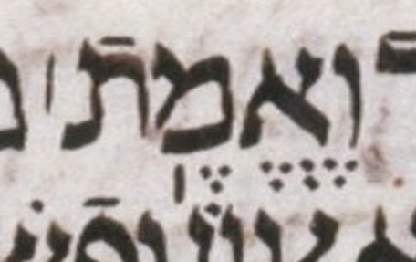
| 0 | slqc | |||||||
| 1 | slqc | sof_pasuqp | ||||||
| 2 | atnc | slqc | ||||||
| 3 | segac | atnc | tipp | slqp | ||||
| 4 | zarp | segap | zaqqp | atnc | ||||
| 5 | tipp | atnp | ||||||
| qom mer zar | sega | mun zaqq | mer tip | atn | mer tip | mer slq | ERROR | |
🔗 Summary: WLC turns a scribal zarqa whim into an outright error.
Mwd | UXLC | UXLC change
ויקר֣א מש֗ה אל־ בצלא֘ל ואל־ אהליאב֒ ואל֙ כל־ א֣יש חכם־ ל֔ב אש֨ר נת֧ן יהו֛ה חכמ֖ה בלב֑ו כ֚ל אש֣ר נשא֣ו לב֔ו לקרב֥ה אל־ המלאכ֖ה לעש֥ת אתֽה׃
| בצלא֘ל | ]s | zarqa_sh_on_א | wlc_focus |
| בצלאל֘ | zarqa_sh_on_ל | diff_wlc_uxlc | |
| בצלאל֮ | zarqa | diff_wlc_mam |
This is one of twelve items of this type. See nu 20:19 for more discussion of items like this.
| 0 | illegal_mark 82 in בְּצַלְאֵ֘ל |
| ERROR |
🔗 Summary: The LC has something like a merkha where a munaḥ is expected.
ולפאת־ י֗ם קלעים֙ חמש֣ים באמ֔ה עמודיה֥ם עשר֔ה ואדניה֖ם עשר֑ה וו֧י העמד֛ים וחשוקיה֖ם כֽסף׃
| עמודיה֥ם | merkha | wlc_focus |
| עמודיה֣ם | munaḥ | diff_wlc_mam |
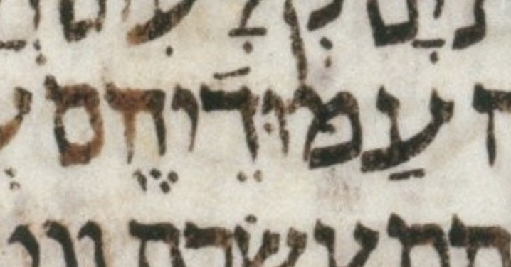
| 0 | slqc | ||||||||
| 1 | atnc | slqc | |||||||
| 2 | zaqqc | atnc | tipc | slqp | |||||
| 3 | revp | zaqqc | zaqqp | atnc | tevp | tipp | |||
| 4 | pashp | zaqqp | tipp | atnp | |||||
| rev | pash | mun zaqq | ERROR | tip | atn | dar tev | tip | slq | |
🔗 Summary: WLC turns a scribal zarqa whim into an outright error.
Mwd | UXLC | UXLC change
דב֞ר אל־ בנ֣י ישרא֘ל לאמר֒ נ֗פש כי־ תחט֤א בשגגה֙ מכל֙ מצו֣ת יהו֔ה אש֖ר ל֣א תעש֑ינה ועש֕ה מאח֖ת מהֽנה׃
| ישרא֘ל | ]s | zarqa_sh_on_א | wlc_focus |
| ישראל֘ | zarqa_sh_on_ל | diff_wlc_uxlc | |
| ישראל֮ | zarqa | diff_wlc_mam |
This is one of twelve items of this type. See nu 20:19 for more discussion of items like this.
| 0 | illegal_mark 82 in יִשְׂרָאֵ֘ל |
| ERROR |
🔗 Summary: A sof pasuq is missing somewhere in the LC-BHS-WLC pipeline.
ערו֥ת אש֛ה ובת֖ה ל֣א תגל֑ה את־ בת־ בנ֞ה ואת־ בת־ בת֗ה ל֤א תקח֙ לגל֣ות ערות֔ה שאר֥ה ה֖נה זמ֥ה הֽוא
| הֽוא | ]1 | silluq-no_sof_pasuq | wlc_focus |
| הֽוא׃ | silluq-sof_pasuq | diff_wlc_mam |
Likely the sof pasuq is missing from the start of the pipeline, i.e. from the LC.
| 0 | slqc | |||||||||
| 1 | slqc | sof_pasuqp | ||||||||
| 2 | atnc | slqc | ||||||||
| 3 | tipc | atnp | zaqqc | slqc | ||||||
| 4 | tevp | tipp | revc | zaqqc | tipp | slqp | ||||
| 5 | gerp | revp | pashp | zaqqp | ||||||
| mer tev | tip | mun atn | ger2 | rev | mah pash | mun zaqq | mer tip | mer slq | ERROR | |
🔗 Summary: A sof pasuq is missing somewhere in the LC-BHS-WLC pipeline.
וידב֥ר יהו֖ה אל־ מש֥ה לאמֽר
| לאמֽר | ]1 | silluq-no_sof_pasuq | wlc_focus |
| לאמֽר׃ | silluq-sof_pasuq | diff_wlc_mam |
Likely the sof pasuq is missing from the start of the pipeline, i.e. from the LC.
| 0 | slqc | ||
| 1 | slqc | sof_pasuqp | |
| 2 | tipp | slqp | |
| mer tip | mer slq | ERROR | |
🔗 Summary: WLC turns a scribal zarqa whim into an outright error.
Mwd | UXLC | UXLC change
ואל־ בנ֣י ישרא֘ל תאמר֒ א֣יש איש֩ מבנ֨י ישרא֜ל ומן־ הג֣ר׀ הג֣ר בישרא֗ל אש֨ר ית֧ן מזרע֛ו למ֖לך מ֣ות יומ֑ת ע֥ם הא֖רץ ירגמ֥הו באֽבן׃
| ישרא֘ל | ]s | zarqa_sh_on_א | wlc_focus |
| ישראל֘ | zarqa_sh_on_ל | diff_wlc_uxlc | |
| ישראל֮ | zarqa | diff_wlc_mam |
This is one of twelve items of this type. See nu 20:19 for more discussion of items like this.
| 0 | illegal_mark 82 in יִשְׂרָאֵ֘ל |
| ERROR |
🔗 Summary: The LC has something like a mahapakh in addition to the expected tipeḥa.
Mwd | UXLC | UXLC note page
וכ֣י תאמר֔ו מה־ נאכ֤֖ל בשנ֣ה השביע֑ת ה֚ן ל֣א נזר֔ע ול֥א נאס֖ף את־ תבואתֽנו׃
| נאכ֤֖ל | ]c]n | mahapakh-tipeḥa | wlc_focus |
| נאכ֖ל | tipeḥa | diff_wlc_mam |
The mark in question is not necessarily a mahapakh. In particular, it may be part of a broken masorah circle from the line below. See the UXLC note page.
| 0 | illegal_mark mahapakh!tipexa in נֹּאכַ֤֖ל |
| ERROR |
🔗 Summary: A sof pasuq is missing somewhere in the LC-BHS-WLC pipeline.
ורדפת֖ם את־ איביכ֑ם ונפל֥ו לפניכ֖ם לחֽרב
| לחֽרב | ]1 | silluq-no_sof_pasuq | wlc_focus |
| לחֽרב׃ | silluq-sof_pasuq | diff_wlc_mam |
Likely the sof pasuq is missing from the start of the pipeline, i.e. from the LC.
| 0 | slqc | ||||
| 1 | slqc | sof_pasuqp | |||
| 2 | atnc | slqc | |||
| 3 | tipp | atnp | tipp | slqp | |
| tip | atn | mer tip | slq | ERROR | |
🔗 Summary: Somewhere in the LC-BHS-WLC pipeline, sof_pasuq appears rather than silluq-sof_pasuq.
והלכת֥י עמכ֖ם בחמת־ ק֑רי ויסרת֤י אתכם֙ אף־ א֔ני ש֖בע על־ חטאתיכם׃
| חטאתיכם׃ | ]1 | sof_pasuq | wlc_focus |
| חטאתיכֽם׃ | silluq-sof_pasuq | diff_wlc_mam |
| 0 | slqc | |||||
| 1 | atnc | slqc | ||||
| 2 | tipp | atnp | zaqqc | slqc | ||
| 3 | pashp | zaqqp | tipp | slqp | ||
| mer tip | atn | mah pash | zaqq | tip | ERROR | |
🔗 Summary: A sof pasuq is missing somewhere in the LC-BHS-WLC pipeline.
כ֥ף אח֛ת עשר֥ה זה֖ב מלא֥ה קטֽרת
| קטֽרת | ]1 | silluq-no_sof_pasuq | wlc_focus |
| קטֽרת׃ | silluq-sof_pasuq | diff_wlc_mam |
Likely the sof pasuq is missing from the start of the pipeline, i.e. from the LC.
| 0 | slqc | |||
| 1 | slqc | sof_pasuqp | ||
| 2 | tipc | slqp | ||
| 3 | tevp | tipp | ||
| mer tev | mer tip | mer slq | ERROR | |
🔗 Summary: A sof pasuq is missing somewhere in the LC-BHS-WLC pipeline.
שעיר־ עז֥ים אח֖ד לחטֽאת
| לחטֽאת | ]1 | silluq-no_sof_pasuq | wlc_focus |
| לחטֽאת׃ | silluq-sof_pasuq | diff_wlc_mam |
Likely the sof pasuq is missing from the start of the pipeline, i.e. from the LC.
| 0 | slqc | ||
| 1 | slqc | sof_pasuqp | |
| 2 | tipp | slqp | |
| mer tip | slq | ERROR | |
🔗 Summary: A sof pasuq is missing somewhere in the LC-BHS-WLC pipeline.
קרבנ֞ו קערת־ כ֣סף אח֗ת שלש֣ים ומאה֮ משקלה֒ מזר֤ק אחד֙ כ֔סף שבע֥ים ש֖קל בש֣קל הק֑דש שניה֣ם׀ מלא֗ים ס֛לת בלול֥ה בש֖מן למנחֽה
| למנחֽה | ]1 | silluq-no_sof_pasuq | wlc_focus |
| למנחֽה׃ | silluq-sof_pasuq | diff_wlc_mam |
Likely the sof pasuq is missing from the start of the pipeline, i.e. from the LC.
| 0 | slqc | |||||||||||||
| 1 | slqc | sof_pasuqp | ||||||||||||
| 2 | atnc | slqc | ||||||||||||
| 3 | segac | atnc | tipc | slqp | ||||||||||
| 4 | revc | segac | zaqqc | atnc | revc | tipc | ||||||||
| 5 | gerp | revp | zarp | segap | pashp | zaqqp | tipp | atnp | lgmp | revp | tevp | tipp | ||
| ger2 | mun rev | mun zar | sega | mah pash | zaqq | mer tip | mun atn | lgm | rev | tev | mer tip | slq | ERROR | |
🔗 Summary: A sof pasuq is missing somewhere in the LC-BHS-WLC pipeline.
כ֥ף אח֛ת עשר֥ה זה֖ב מלא֥ה קטֽרת
| קטֽרת | ]1 | silluq-no_sof_pasuq | wlc_focus |
| קטֽרת׃ | silluq-sof_pasuq | diff_wlc_mam |
Likely the sof pasuq is missing from the start of the pipeline, i.e. from the LC.
| 0 | slqc | |||
| 1 | slqc | sof_pasuqp | ||
| 2 | tipc | slqp | ||
| 3 | tevp | tipp | ||
| mer tev | mer tip | mer slq | ERROR | |
🔗 Summary: WLC turns a scribal zarqa whim into an outright error.
Mwd | UXLC | UXLC change
ויאמר֨ו אל֥יו בני־ ישרא֘ל במסל֣ה נעלה֒ ואם־ מימ֤יך נשתה֙ אנ֣י ומקנ֔י ונתת֖י מכר֑ם ר֥ק אין־ דב֖ר ברגל֥י אעבֽרה׃
| ישרא֘ל | ]s | zarqa_sh_on_א | wlc_focus |
| ישראל֘ | zarqa_sh_on_ל | diff_wlc_uxlc | |
| ישראל֮ | zarqa | diff_wlc_mam |
This is one of 12 cases involving zarqa on lamed in which WLC made not only poor decisions but also outright errors. All 12 cases are flagged as oddballs (report “ERROR”), treated uniformly as the lexical (“alphabet”) errors they are, independent of surrounding context.
WLC’s first poor decision was to attempt to encode a meaningless scribal whim: the placement of a zarqa before the lamed ascender rather than after it. See the image in the UXLC change to which we link above.
WLC’s second poor decision was to characterize this as the correction of a typesetting error in BHS/BHQ. While I am as great a critic of BHS/BHQ as anyone, this is unfair. The treatment of these words in BHS/BHQ is almost certainly an editorial decision, not an oddly-systematic set of typesetting errors.
WLC’s third poor decision was to encode this by further overloading the meaning of accent 82, which is already used as tsinnorit and, rarely, as a stress-helper to accent 02 (zarqa/tsinnor).
Finally, WLC greatly compounded these poor decisions by making an outright error in implementation: the 82 codes are consistently placed preceding rather than following the L (lamed) in question, in one case by even more than one letter too far back.
They are consistently placed in a location that would be more appropriate for a tsinnorit or a zarqa stress helper, namely, on the first letter of the syllable ending in lamed, rather than on the lamed itself.
This is one of twelve oddballs of this same type, in which WLC turned a scribal zarqa whim into an outright error.
| 0 | illegal_mark 82 in יִשְׂרָאֵ֘ל |
| ERROR |
🔗 Summary: BHS puts a verse number in the middle of a chanted verse.
ויה֖י אחר֣י המגפ֑ה
| המגפ֑ה | ]1 | etnaḥta | wlc_focus |
Compared to MAM, BHS starts chapter 26 “late”. It only starts chapter 26 after the etnaḥta of what MAM calls 26:1. It labels the first part of what MAM calls 26:1 as 25:19, a verse number that does not exist in MAM.
In other words, the accent grammar is unexceptional here if we ignore where BHS happens to put its verse labels. In this light, the bracket-1 note in WLC should be removed. There is no anomaly in the LC here.
MAM is not exceptional in its more cantillation-aware versification here; above I might have said “many editions” instead of “MAM” but I wanted to be specific.
As to where BHS got this versification, I suspect it is not original to BHS. This versification’s rather extraordinary mid-chanted-verse verse number does correspond to a rather extraordinary mid-chanted-verse parashah petuḥah break. So, while this verse number is not at the boundary of a chanted verse, it is at a boundary deemed quite significant in the layout of both cantillated and letter-only Hebrew texts.
| 0 | slqc | |||
| 1 | slqc | sof_pasuqp | ||
| 2 | atnc | slqp | ||
| 3 | tipp | atnp | ||
| tip | mun atn | ERROR | ERROR | |
🔗 Summary: Somewhere in the LC-BHS-WLC pipeline, sof_pasuq appears rather than silluq-sof_pasuq.
ואם־ א֥ין ל֖ו ב֑ת ונתת֥ם את־ נחלת֖ו לאחיו׃
| לאחיו׃ | ]1 | sof_pasuq | wlc_focus |
| לאחֽיו׃ | silluq-sof_pasuq | diff_wlc_mam |
| 0 | slqc | |||
| 1 | atnc | slqc | ||
| 2 | tipp | atnp | tipp | slqp |
| mer tip | atn | mer tip | ERROR | |
🔗 Summary: Dual cantillation (Decalogue): in the taxton (lower) reading the WLC 4.22 text carries a merkha on תעשה where that reading is due a qadma — an accent neither reading explains — so the detangled taxton chanted verse does not parse. Flagged as a candidate dual-cantillation error (source not yet checked against LC/BHS/BHQ); issue #36.
ל֣א־ תעש֥ה־ לך֥֣ פ֣֙סל֙׀ כל־ תמונ֔֡ה אש֤֣ר בשמ֣֙ים֙׀ ממ֔֡על ואש֥ר֩ בא֖֨רץ מת֑֜חת ואש֥ר במ֖֣ים׀ מת֥֣חת לאֽ֗רץ׃
| wlc_focus | ||
| wlc422: תעש֥ה־; uxlc: תעש֙ה־ | diff_wlc_uxlc | |
| wlc422: תעש֥ה־; mam_simple: תעש֨ה־ | diff_wlc_mam |
| 0 | slqc | |||||||
| 1 | atnc | slqc | ||||||
| 2 | zaqqc | atnc | tipp | slqp | ||||
| 3 | pashp | zaqqp | zaqqc | atnc | ||||
| 4 | pashp | zaqqp | tipp | atnp | ||||
| ERROR | zaqq | mah pash | zaqq | mer tip | atn | mer tip | mer slq | |
🔗 Summary: A sof pasuq is missing somewhere in the LC-BHS-WLC pipeline.
ובאהר֗ן התאנ֧ף יהו֛ה מא֖ד להשמיד֑ו ואתפל֛ל גם־ בע֥ד אהר֖ן בע֥ת ההֽוא
| ההֽוא | ]Q]n]p | silluq-no_sof_pasuq | wlc_focus |
| ההֽוא׃ | silluq-sof_pasuq | diff_wlc_mam |
Likely the sof pasuq is missing from the start of the pipeline, i.e. from the LC.
| 0 | slqc | |||||||
| 1 | slqc | sof_pasuqp | ||||||
| 2 | atnc | slqc | ||||||
| 3 | tipc | atnp | tipc | slqp | ||||
| 4 | revp | tipc | tevp | tipp | ||||
| 5 | tevp | tipp | ||||||
| rev | dar tev | tip | atn | tev | mer tip | mer slq | ERROR | |
🔗 Summary: Somewhere in the LC-BHS-WLC pipeline, sof_pasuq appears rather than silluq-sof_pasuq.
ר֧ק באבת֛יך חש֥ק יהו֖ה לאהב֣ה אות֑ם ויבח֞ר בזרע֣ם אחריה֗ם בכ֛ם מכל־ העמ֖ים כי֥ום הזה׃
| הזה׃ | ]U | sof_pasuq | wlc_focus |
| הזֽה׃ | silluq-sof_pasuq | diff_wlc_mam |
| 0 | slqc | |||||||
| 1 | atnc | slqc | ||||||
| 2 | tipc | atnp | tipc | slqp | ||||
| 3 | tevp | tipp | revc | tipc | ||||
| 4 | gerp | revp | tevp | tipp | ||||
| dar tev | mer tip | mun atn | ger2 | mun rev | tev | tip | ERROR | |
🔗 Summary: Somewhere in the LC-BHS-WLC pipeline, sof_pasuq appears rather than silluq-sof_pasuq.
אב֣ד ת֠אבדון את־ כל־ המקמ֞ות אש֧ר עבדו־ ש֣ם הגוי֗ם אש֥ר את֛ם ירש֥ים את֖ם את־ אלהיה֑ם על־ ההר֤ים הרמים֙ ועל־ הגבע֔ות ות֖חת כל־ ע֥ץ רענן׃
| רענן׃ | ]U | sof_pasuq | wlc_focus |
| רענֽן׃ | silluq-sof_pasuq | diff_wlc_mam |
| 0 | slqc | |||||||||
| 1 | atnc | slqc | ||||||||
| 2 | tipc | atnp | zaqqc | slqc | ||||||
| 3 | revc | tipc | pashp | zaqqp | tipp | slqp | ||||
| 4 | telgp | revc | tevp | tipp | ||||||
| 5 | gerp | revp | ||||||||
| mun telg | ger2 | dar mun rev | mer tev | mer tip | atn | mah pash | zaqq | tip | ERROR | |
🔗 Summary: The LC has darga where it should have tevir.
ודרשת֧ וחקרת֧ ושאלת֖ היט֑ב והנ֤ה אמת֙ נכ֣ון הדב֔ר נעשת֛ה התועב֥ה הז֖את בקרבֽך׃
| וחקרת֧ | ]U | darga | wlc_focus |
| וחקרת֛ | tevir | diff_wlc_mam |
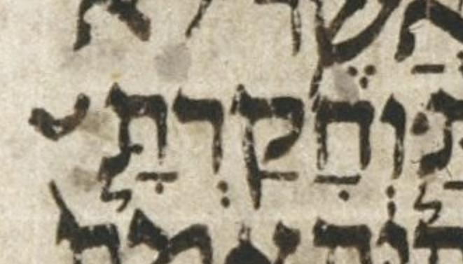
| 0 | slqc | ||||||
| 1 | atnc | slqc | |||||
| 2 | tipp | atnp | zaqqc | slqc | |||
| 3 | pashp | zaqqp | tipc | slqp | |||
| 4 | tevp | tipp | |||||
| ERROR | atn | mah pash | mun zaqq | tev | mer tip | slq | |
🔗 Summary: WLC turns a scribal zarqa whim into an outright error.
Mwd | UXLC | UXLC change
וכי־ ירב֨ה ממך֜ הד֗רך כ֣י ל֣א תוכ֘ל שאתו֒ כי־ ירח֤ק ממך֙ המק֔ום אש֤ר יבחר֙ יהו֣ה אלה֔יך לש֥ום שמ֖ו ש֑ם כ֥י יברכך֖ יהו֥ה אלהֽיך׃
| תוכ֘ל | ]S]s | zarqa_sh_on_כ | wlc_focus |
| תוכל֘ | zarqa_sh_on_ל | diff_wlc_uxlc | |
| תוכל֮ | zarqa | diff_wlc_mam |
This is one of twelve items of this type. See nu 20:19 for more discussion of items like this.
| 0 | illegal_mark 82 in תוּכַ֘ל |
| ERROR |
🔗 Summary: Somewhere in the LC-BHS-WLC pipeline, sof_pasuq appears rather than silluq-sof_pasuq.
לא־ תהי֥ה קדש֖ה מבנ֣ות ישרא֑ל ולא־ יהי֥ה קד֖ש מבנ֥י ישראל׃
| ישראל׃ | ]U | sof_pasuq | wlc_focus |
| ישראֽל׃ | silluq-sof_pasuq | diff_wlc_mam |
| 0 | slqc | |||
| 1 | atnc | slqc | ||
| 2 | tipp | atnp | tipp | slqp |
| mer tip | mun atn | mer tip | ERROR | |
🔗 Summary: The LC has only meteg where meteg-tipeḥa is expected.
כי־ תש֥ה ברעך מש֣את מא֑ומה לא־ תב֥א אל־ בית֖ו לעב֥ט עבטֽו׃
| ברֽעך | ]U | meteg-space | wlc_focus |
| ברֽעך֖ | meteg-tipeḥa | diff_wlc_mam |
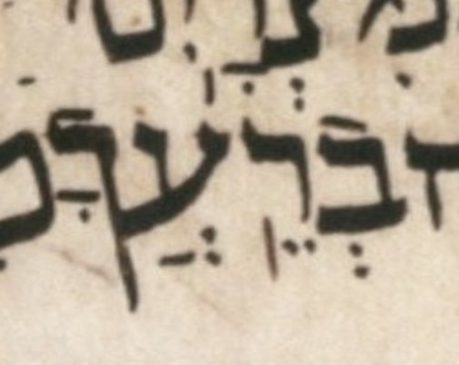
We could also interpret the LC’s mark under the resh as a tipeḥa that comes unexpectedly early in the word.
We could also speculate that what seems to be the long descender of the final kaf includes a tipeḥa placed too early relative to the kaf.
Yet, just as I have criticized some transcriptions as aggresively uncharitable, there is no doubt such a thing as a transcription that is too aggressively charitable, and these suggestions above, i.e. these ways of saving the word from violating the accent grammar, may be examples of that.
The most likely explanation is that the LC simply does not have the expected tipeḥa anywhere in the word.
| 0 | slqc | ||
| 1 | atnp | slqc | |
| 2 | tipp | slqp | |
| ERROR | mer tip | mer slq | |
🔗 Summary: A sof pasuq is missing somewhere in the LC-BHS-WLC pipeline.
ונגש֨ה יבמת֣ו אליו֮ לעינ֣י הזקנים֒ וחלצ֤ה נעלו֙ מע֣ל רגל֔ו וירק֖ה בפנ֑יו וענתה֙ וא֣מר֔ה כ֚כה יעש֣ה לא֔יש אש֥ר לא־ יבנ֖ה את־ ב֥ית אחֽיו
| אחֽיו | ]Q]n]p | silluq-no_sof_pasuq | wlc_focus |
| אחֽיו׃ | silluq-sof_pasuq | diff_wlc_mam |
Likely the sof pasuq is missing from the start of the pipeline, i.e. from the LC.
| 0 | slqc | ||||||||||||
| 1 | slqc | sof_pasuqp | |||||||||||
| 2 | atnc | slqc | |||||||||||
| 3 | segac | atnc | zaqqc | slqc | |||||||||
| 4 | zarp | segap | zaqqc | atnc | pashp | zaqqp | zaqqc | slqc | |||||
| 5 | pashp | zaqqp | tipp | atnp | pashp | zaqqp | tipp | slqp | |||||
| qom mun zar | mun sega | mah pash | mun zaqq | tip | atn | pash | mun zaqq | yet | mun zaqq | mer tip | mer slq | ERROR | |
🔗 Summary: WLC turns a scribal zarqa whim into an outright error.
Mwd | UXLC | UXLC change
ויקר֨א מש֜ה ליהוש֗ע וי֨אמר אל֜יו לעינ֣י כל־ ישרא֘ל חז֣ק ואמץ֒ כ֣י את֗ה תבוא֙ את־ הע֣ם הז֔ה אל־ הא֕רץ אש֨ר נשב֧ע יהו֛ה לאבת֖ם לת֣ת לה֑ם ואת֖ה תנחיל֥נה אותֽם׃
| ישרא֘ל | ]S]s | zarqa_sh_on_א | wlc_focus |
| ישראל֘ | zarqa_sh_on_ל | diff_wlc_uxlc | |
| ישראל֮ | zarqa | diff_wlc_mam |
This is one of twelve items of this type. See nu 20:19 for more discussion of items like this.
| 0 | illegal_mark 82 in יִשְׂרָאֵ֘ל |
| ERROR |
🔗 Summary: WLC turns a scribal zarqa whim into an outright error.
Mwd | UXLC | UXLC change
ויעשו־ כ֣ן בני־ ישרא֘ל כאש֣ר צו֣ה יהושע֒ וישא֡ו שתי־ עשר֨ה אבנ֜ים מת֣וך הירד֗ן כאש֨ר דב֤ר יהוה֙ אל־ יהוש֔ע למספ֖ר שבט֣י בני־ ישרא֑ל ויעבר֤ום עמם֙ אל־ המל֔ון וינח֖ום שֽם׃
| ישרא֘ל | ]s | zarqa_sh_on_א | wlc_focus |
| ישראל֘ | zarqa_sh_on_ל | diff_wlc_uxlc | |
| ישראל֮ | zarqa | diff_wlc_mam |
This is one of twelve items of this type. See nu 20:19 for more discussion of items like this.
| 0 | illegal_mark 82 in יִשְׂרָאֵ֘ל |
| ERROR |
🔗 Summary: WLC turns a scribal zarqa whim into an outright error.
Mwd | UXLC | UXLC change
ויתן֩ יהו֨ה גם־ אות֜ה בי֣ד ישרא֘ל ואת־ מלכה֒ ויכ֣ה לפי־ ח֗רב ואת־ כל־ הנ֙פש֙ אשר־ ב֔ה לא־ השא֥יר ב֖ה שר֑יד וי֣עש למלכ֔ה כאש֥ר עש֖ה למ֥לך יריחֽו׃
| ישרא֘ל | ]s | zarqa_sh_on_א | wlc_focus |
| ישראל֘ | zarqa_sh_on_ל | diff_wlc_uxlc | |
| ישראל֮ | zarqa | diff_wlc_mam |
This is one of twelve items of this type. See nu 20:19 for more discussion of items like this.
| 0 | illegal_mark 82 in יִשְׂרָאֵ֘ל |
| ERROR |
🔗 Summary: The LC has merkha where tevir is expected.
אשד֞וד בנות֣יה וחצר֗יה עז֥ה בנות֥יה וחצר֖יה עד־ נ֣חל מצר֑ים והי֥ם הגד֖ול וגבֽול׃
| עז֥ה | merkha | wlc_focus |
| עז֛ה | tevir | diff_wlc_mam |
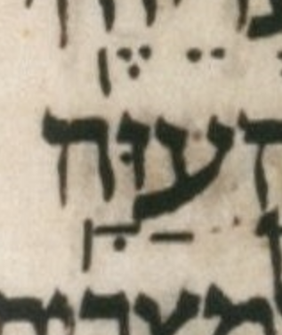
| 0 | slqc | |||||
| 1 | atnc | slqc | ||||
| 2 | tipc | atnp | tipp | slqp | ||
| 3 | revc | tipp | ||||
| 4 | gerp | revp | ||||
| ger2 | mun rev | ERROR | mun atn | mer tip | slq | |
🔗 Summary: The LC has munaḥ where a merkha is expected.
וי֣אמר יהו֖ה יהוד֣ה יעל֑ה הנ֛ה נת֥תי את־ הא֖רץ בידֽו׃
| וי֣אמר | munaḥ | wlc_focus |
| וי֥אמר | merkha | diff_wlc_mam |
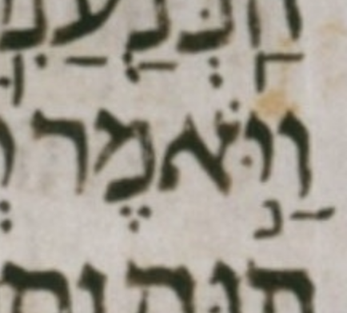
| 0 | slqc | ||||
| 1 | atnc | slqc | |||
| 2 | tipp | atnp | tipc | slqp | |
| 3 | tevp | tipp | |||
| ERROR | mun atn | tev | mer tip | slq | |
🔗 Summary: BHS transcribes a faded, ambiguous mark as merkha rather than munaḥ.
Mwd | UXLC | Pending UXLC change
הל֞א א֣ת אש֧ר יורישך֛ כמ֥וש אלה֖יך אות֥ו תיר֑ש ואת֩ כל־ אש֨ר הור֜יש יהו֧ה אלה֛ינו מפנ֖ינו אות֥ו נירֽש׃
| אות֥ו תיר֑ש | merkha etnaḥta | wlc_focus |
| אות֣ו תיר֑ש | munaḥ etnaḥta | diff_wlc_mam |
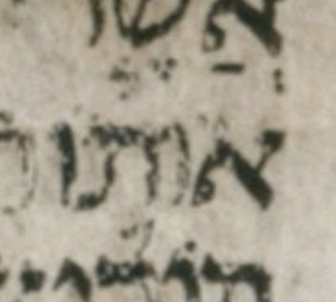
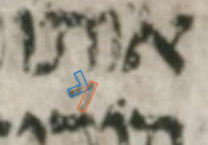
Ignoring the grammar of accents, the faded remains of the mark in question are slightly more plausibly interpreted as a munaḥ than a merkha. But the “upright” part of the munaḥ is very faint, if it is even there are all and I am not kidding myself, seeing what I want to see rather than what is actually there.
Note that a geresh from הוריש on the line below complicates the colliding with the elbow of the proposed munaḥ.
In an image above, I have outlined the proposed munaḥ and the colliding geresh.
One of the most extraordinary things about BHS (continued by BHQ) is that, to my knowledge, it never acknowledges any uncertainty in its transcription of the LC. Yet of course any transcription of the LC is surely fraught with hundreds of serious uncertainties. Although space constraints are extreme in any single-volume Tanakh like BHS, really the only responsible thing to do for a word like this is to acknowledge the uncertainty somehow, and either transcribe no accent at all or use context (grammar) combined with the (faint) evidence to make a good guess, which in this case would be munaḥ.
To transcribe this word as (illegally) accented with merkha without any acknowledgment of either illegality or uncertainty is, to me, bordering on irresponsible.
| 0 | slqc | |||||||
| 1 | atnc | slqc | ||||||
| 2 | tipc | atnp | tipc | slqp | ||||
| 3 | tevc | tipp | tevc | tipp | ||||
| 4 | gerp | tevp | gerp | tevp | ||||
| ger2 | mun dar tev | mer tip | ERROR | telq qom ger | dar tev | tip | mer slq | |
🔗 Summary: BHQ transcribes a silluq as a tevir due to a speck.
Mwd | UXLC | UXLC note page
וי֤אמר לו֙ מלא֣ך יהו֔ה ל֥מה ז֖ה תשא֣ל לשמ֑י והוא־ פ֛לאי׃
| פ֛לאי׃ | ]Q]c]n | tevir-sof_pasuq | wlc_focus |
| פֽלאי׃ | silluq-sof_pasuq | diff_wlc_mam |
Color images make it clearer that the mark in question is a speck on the LC vellum rather than a tevir dot made of ink. See the image in the UXLC note to which we link above.
Even if the editors of BHQ Judges (2011) lacked access to color images, this was an overly-literal, aggressively uncharitable transcription. Even without color, they should have been aware that this could be a non-ink speck on the LC vellum or a non-intentional ink dot. They should have found one of these possibilities more likely than a verse-final tevir. A verse-final tevir is rather far-fetched.
Are they attempting to use typography to create a pseudo-photographic image of the LC, or are they trying to transcribe the LC “meaningfully,” using some degree of interpretation to determine the most likely intended meaning of each mark? (Sometimes, as is the case here, the most likely intended meaning of a mark is no meaning at all!)
| 0 | slqc | |||||
| 1 | atnc | slqc | ||||
| 2 | zaqqc | atnc | tevp | slqp | ||
| 3 | pashp | zaqqp | tipp | atnp | ||
| mah pash | mun zaqq | mer tip | mun atn | tev | ERROR | |
🔗 Summary: BHS transcribes a syllable as having qadma rather than pashta.
Mwd | UXLC | Pending UXLC change
ויאמר֨ו זקנ֣י העד֔ה מה־ נעש֥ה לנותר֖ים לנש֑ים כי־ נשמד֥ה מבנימ֖ן אשֽה׃
| ויֽאמר֨ו | meteg-qadma_on_ר | wlc_focus |
| ויֽאמרו֙ | meteg-pashta_on_ו | diff_wlc_mam |
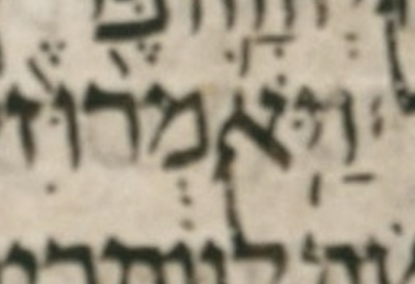
| 0 | slqc | ||||
| 1 | atnc | slqc | |||
| 2 | zaqqp | atnc | tipp | slqp | |
| 3 | tipp | atnp | |||
| ERROR | mer tip | atn | mer tip | slq | |
🔗 Summary: A sof pasuq is missing somewhere in the LC-BHS-WLC pipeline.
וי֞ך באנש֣י בית־ ש֗מש כ֤י ראו֙ באר֣ון יהו֔ה וי֤ך בעם֙ שבע֣ים א֔יש חמש֥ים א֖לף א֑יש ויתאבל֣ו הע֔ם כי־ הכ֧ה יהו֛ה בע֖ם מכ֥ה גדולֽה
| גדולֽה | ]1 | silluq-no_sof_pasuq | wlc_focus |
| גדולֽה׃ | silluq-sof_pasuq | diff_wlc_mam |
Likely the sof pasuq is missing from the start of the pipeline, i.e. from the LC.
| 0 | slqc | ||||||||||||
| 1 | slqc | sof_pasuqp | |||||||||||
| 2 | atnc | slqc | |||||||||||
| 3 | zaqqc | atnc | zaqqp | slqc | |||||||||
| 4 | revc | zaqqc | zaqqc | atnc | tipc | slqp | |||||||
| 5 | gerp | revp | pashp | zaqqp | pashp | zaqqp | tipp | atnp | tevp | tipp | |||
| ger2 | mun rev | mah pash | mun zaqq | mah pash | mun zaqq | mer tip | atn | mun zaqq | dar tev | tip | mer slq | ERROR | |
🔗 Summary: BHS transcribes a syllable as having qadma rather than pashta.
Mwd | UXLC | UXLC change
וי֥שב דו֖ד לבר֣ך את־ בית֑ו ותצ֞א מיכ֤ל בת־ שאול֙ לקר֣את דו֔ד ות֗אמר מה־ נכב֨ד הי֜ום מ֣לך ישרא֗ל אש֨ר נגל֤ה היום֙ לעינ֨י אמה֣ות עבד֔יו כהגל֥ות נגל֖ות אח֥ד הרקֽים׃
| לעינ֨י | qadma_on_נ | wlc_focus |
| לעיני֙ | pashta_on_י | diff_wlc_uxlc |
| לעיני֙ | pashta_on_י | diff_wlc_mam |
| 0 | slqc | |||||||||||
| 1 | atnc | slqc | ||||||||||
| 2 | tipp | atnp | zaqqc | slqc | ||||||||
| 3 | pashc | zaqqp | zaqqc | slqc | ||||||||
| 4 | gerp | pashp | revp | zaqqc | tipp | slqp | ||||||
| 5 | revc | zaqqc | ||||||||||
| 6 | gerp | revp | pashp | zaqqp | ||||||||
| mer tip | mun atn | ger2 | mah pash | mun zaqq | rev | qom ger | mun rev | qom mah pash | ERROR | mer tip | mer slq | |
🔗 Summary: BHS transcribes a syllable as having qadma rather than pashta.
Mwd | UXLC | Pending UXLC change
וי֨אמר אורי֜ה אל־ דו֗ד ה֠ארון וישרא֨ל ויהוד֜ה ישב֣ים בסכ֗ות ואדנ֨י יוא֜ב ועבד֤י אדנ֨י על־ פנ֤י השדה֙ חנ֔ים ואנ֞י אב֧וא אל־ בית֛י לאכ֥ל ולשת֖ות ולשכ֣ב עם־ אשת֑י חי֙ך֙ וח֣י נפש֔ך אם־ אעש֖ה את־ הדב֥ר הזֽה׃
| אדנ֨י | qadma_on_נ | wlc_focus |
| אדני֙ | pashta_on_י | diff_wlc_mam |
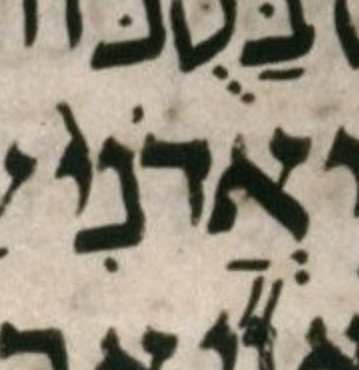
| 0 | slqc | |||||||||||||||
| 1 | atnc | slqc | ||||||||||||||
| 2 | zaqqc | atnc | zaqqc | slqc | ||||||||||||
| 3 | revc | zaqqc | tipc | atnp | pashp | zaqqp | tipp | slqp | ||||||||
| 4 | gerp | revp | revc | zaqqc | tevc | tipp | ||||||||||
| 5 | telgp | revc | pashc | zaqqp | gerp | tevp | ||||||||||
| 6 | gerp | revp | gerp | pashp | ||||||||||||
| qom ger | rev | telg | qom ger | mun rev | qom ger | ERROR | zaqq | ger2 | dar tev | mer tip | mun atn | pash | mun zaqq | tip | mer slq | |
🔗 Summary: BHS does not transcribe a pashta, leaving the word without accent.
Mwd | UXLC | UXLC change
ואחר֛יו אלעז֥ר בן־ דד֖ו בן־ אחח֑י בשלש֨ה הגבר֜ים עם־ דו֗ד בחרפ֤ם בפלשתים נאספו־ ש֣ם למלחמ֔ה ויעל֖ו א֥יש ישראֽל׃
| בפלשתים | no_accent | wlc_focus |
| בפלשתים֙ | pashta_on_ם | diff_wlc_uxlc |
| בפלשתים֙ | pashta_on_ם | diff_wlc_mam[2] |
| 0 | slqc | |||||||
| 1 | atnc | slqc | ||||||
| 2 | tipc | atnp | zaqqc | slqc | ||||
| 3 | tevp | tipp | revc | zaqqp | tipp | slqp | ||
| 4 | gerp | revp | ||||||
| tev | mer tip | atn | qom ger | rev | ERROR | tip | mer slq | |
🔗 Summary: BHS transcribes a munaḥ as a mahapakh.
Mwd | UXLC | UXLC change
והב֗ית אש֨ר בנ֜ה המ֤לך שלמה֙ ליהו֔ה ששים־ אמ֥ה ארכ֖ו ועשר֤ים רחב֑ו ושלש֥ים אמ֖ה קומתֽו׃
| ועשר֤ים | mahapakh | wlc_focus |
| ועשר֣ים | munaḥ | diff_wlc_uxlc |
| ועשר֣ים | munaḥ | diff_wlc_mam |
See the image in the UXLC change to which we link above.
| 0 | slqc | |||||||
| 1 | atnc | slqc | ||||||
| 2 | zaqqc | atnc | tipp | slqp | ||||
| 3 | revp | zaqqc | tipp | atnp | ||||
| 4 | pashc | zaqqp | ||||||
| 5 | gerp | pashp | ||||||
| rev | qom ger | mah pash | zaqq | mer tip | ERROR | mer tip | slq | |
🔗 Summary: BHS transcribes a mahapakh as a munaḥ.
Mwd | UXLC | UXLC change
והאול֗ם על־ פני֙ היכ֣ל הב֔ית עשר֣ים אמה֙ ארכ֔ו על־ פנ֖י ר֣חב הב֑ית ע֧שר באמ֛ה רחב֖ו על־ פנ֥י הבֽית׃
| עשר֣ים | munaḥ | wlc_focus |
| עשר֤ים | mahapakh | diff_wlc_uxlc |
| עשר֤ים | mahapakh | diff_wlc_mam |
| 0 | slqc | |||||||||
| 1 | atnc | slqc | ||||||||
| 2 | zaqqc | atnc | tipc | slqp | ||||||
| 3 | revp | zaqqc | zaqqc | atnc | tevp | tipp | ||||
| 4 | pashp | zaqqp | pashp | zaqqp | tipp | atnp | ||||
| rev | pash | mun zaqq | ERROR | zaqq | tip | mun atn | dar tev | tip | mer slq | |
🔗 Summary: BHS transcribes a munaḥ as a merkha.
Mwd | UXLC | UXLC change
ולא־ יכל֧ו הכהנ֛ים לעמ֥ד לשר֖ת מפנ֥י הענ֑ן כי־ מל֥א כבוד־ יהו֖ה את־ ב֥ית יהוֽה׃
| מפנ֥י | merkha | wlc_focus |
| מפנ֣י | munaḥ | diff_wlc_uxlc |
| מפנ֣י | munaḥ | diff_wlc_mam |
| 0 | slqc | ||||
| 1 | atnc | slqc | |||
| 2 | tipc | atnp | tipp | slqp | |
| 3 | tevp | tipp | |||
| dar tev | mer tip | ERROR | mer tip | mer slq | |
🔗 Summary: BHS’s qadma matches neither the LC nor the consensus.
Mwd | UXLC | UXLC change
וי֥עש אחא֖ב את־ האשר֑ה וי֨וסף אחא֜ב לעש֗ות להכעיס֙ את־ יהוה֙ אלה֣י ישרא֔ל מכ֨ל מלכ֣י ישרא֔ל אש֥ר הי֖ו לפנֽיו׃
| מכ֨ל | qadma_on_כ | wlc_focus |
| מכל | no_accent | diff_wlc_uxlc[2] |
| מכל֙ | pashta_on_ל | diff_wlc_mam |
The LC has no visible accent on מכל. See the image in the UXLC change to which we link above. The consensus accents the final syllable with pashta rather than qadma.
| 0 | slqc | |||||||||
| 1 | atnc | slqc | ||||||||
| 2 | tipp | atnp | zaqqc | slqc | ||||||
| 3 | revc | zaqqc | zaqqp | slqc | ||||||
| 4 | gerp | revp | pashp | zaqqc | tipp | slqp | ||||
| 5 | pashp | zaqqp | ||||||||
| mer tip | atn | qom ger | rev | pash | pash | mun zaqq | ERROR | mer tip | slq | |
🔗 Summary: The LC is missing a pashta.
וי֗אמר צ֣א ועמדת֣ בהר֮ לפנ֣י יהוה֒ והנ֧ה יהו֣ה עב֗ר ור֣וח גדול֡ה וחז֞ק מפרק֩ הר֨ים ומשב֤ר סלעים֙ לפנ֣י יהו֔ה ל֥א בר֖וח יהו֑ה ואח֤ר הר֨וח ר֔עש ל֥א בר֖עש יהוֽה׃
| הר֨וח | ]1 | qadma_on_ר | wlc_focus |
| הר֙וח֙ | pashta_on_ר-pashta_on_ח | diff_wlc_mam |
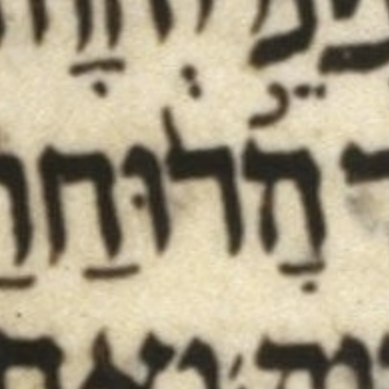
Arguably, WLC and UXLC should code the mark on the resh as a pashta rather than a qadma.
| 0 | slqc | ||||||||||||
| 1 | atnc | slqc | |||||||||||
| 2 | segac | atnc | zaqqp | slqc | |||||||||
| 3 | revp | segac | zaqqc | atnc | tipp | slqp | |||||||
| 4 | zarp | segap | revp | zaqqc | tipp | atnp | |||||||
| 5 | pashc | zaqqp | |||||||||||
| 6 | pazp | pashc | |||||||||||
| 7 | gerp | pashp | |||||||||||
| rev | mun mun zar | mun sega | dar mun rev | mun paz | ger2 | telq qom mah pash | mun zaqq | mer tip | atn | ERROR | mer tip | slq | |
🔗 Summary: The checker may prefer merkha to LC’s munaḥ. Or it may not like either.
ואת֣ה תמנה־ לך֣׀ ח֡יל כחיל֩ הנפ֨ל מאות֜ך וס֣וס כס֣וס׀ ור֣כב כר֗כב ונלחמ֤ה אותם֙ במיש֔ור אם־ ל֥א נחז֖ק מה֑ם וישמ֥ע לקל֖ם וי֥עש כֽן׃
| וס֣וס | munaḥ | wlc_focus |
| וס֥וס | merkha | diff_wlc_mam[2] |
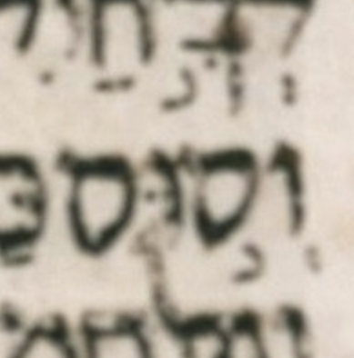
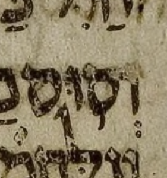
| 0 | slqc | |||||||||
| 1 | atnc | slqc | ||||||||
| 2 | zaqqc | atnc | tipp | slqp | ||||||
| 3 | revc | zaqqc | tipp | atnp | ||||||
| 4 | pazp | revc | pashp | zaqqp | ||||||
| 5 | gerp | revc | ||||||||
| 6 | lgmp | revp | ||||||||
| mun mun paz | telq qom ger | ERROR | mun rev | mah pash | zaqq | mer tip | atn | mer tip | mer slq | |
🔗 Summary: BHS transcribes a meteg as a merkha and ignores a maqaf.
Mwd | UXLC | UXLC change
ויחנ֧ו א֦לה נ֥כח א֖לה שבע֣ת ימ֑ים ויה֣י׀ בי֣ום השביע֗י ותקרב֙ המלחמ֔ה ויכ֨ו בני־ ישרא֧ל את־ אר֛ם מאה־ א֥לף רגל֖י בי֥ום אחֽד׃
| נ֥כח | merkha | wlc_focus |
| נֽכח־ | meteg-maqaf | diff_wlc_uxlc |
| נֽכח־ | meteg-maqaf | diff_wlc_mam |
See the image in the UXLC change to which we link above.
Aside: I am not sure what, if anything, is grammatically “wrong” about a merkha here. Indeed see the MAM doc-note for a list of some of the sources that have merkha. Maybe this merkha is not even what the Goerwitz checker is flagging as wrong. The overall sequence involves merkha kefula; I wonder whether, because it is so rare, we lack a good sense of the “legality” of sequences involving it. The sequence in question is darga, merkha kefula, something on נכח (the atom in question), and then tipeḥa.
| 0 | slqc | ||||||||
| 1 | atnc | slqc | |||||||
| 2 | tipp | atnp | zaqqc | slqc | |||||
| 3 | revc | zaqqc | tipc | slqp | |||||
| 4 | lgmp | revp | pashp | zaqqp | tevp | tipp | |||
| ERROR | mun atn | lgm | mun rev | pash | zaqq | qom dar tev | mer tip | mer slq | |
🔗 Summary: BHS transcribes a syllable as having qadma rather than pashta.
Mwd | UXLC | UXLC change
בן־ עשר֨ים וחמ֤ש שנ֨ה יהויק֣ים במלכ֔ו ואח֤ת עשרה֙ שנ֔ה מל֖ך בירושל֑ם וש֣ם אמ֔ו זבוד֥ה בת־ פדי֖ה מן־ רומֽה׃
| שנ֨ה | qadma_on_נ | wlc_focus |
| שנה֙ | pashta_on_ה | diff_wlc_uxlc |
| שנה֙ | pashta_on_ה | diff_wlc_mam |
See the image in the UXLC change to which we link above.
| 0 | slqc | |||||||
| 1 | atnc | slqc | ||||||
| 2 | zaqqp | atnc | zaqqp | slqc | ||||
| 3 | zaqqc | atnc | tipp | slqp | ||||
| 4 | pashp | zaqqp | tipp | atnp | ||||
| ERROR | mah pash | zaqq | tip | atn | mun zaqq | mer tip | slq | |
🔗 Summary: Somewhere in the LC-BHS-WLC pipeline, sof_pasuq appears rather than silluq-sof_pasuq.
על־ כ֖ן כל־ יד֣ים תרפ֑ינה וכל־ לב֥ב אנ֖וש ימס׃
| ימס׃ | ]1 | sof_pasuq | wlc_focus |
| ימֽס׃ | silluq-sof_pasuq | diff_wlc_mam |
| 0 | slqc | |||
| 1 | atnc | slqc | ||
| 2 | tipp | atnp | tipp | slqp |
| tip | mun atn | mer tip | ERROR | |
🔗 Summary: The checker rejects munaḥ serving munaḥ legarmeh; the servus must be merkha.
וישל֣ח מלך־ אש֣ור׀ את־ רב־ שק֨ה מלכ֧יש ירושל֛מה אל־ המ֥לך חזקי֖הו בח֣יל כב֑ד ויעמ֗ד בתעלת֙ הברכ֣ה העליונ֔ה במסל֖ת שד֥ה כובֽס׃
| וישל֣ח | munaḥ | wlc_focus |
| וישל֥ח | merkha | diff_wlc_mam |
This verse is the sole member of the FOI category “⅃-leg...non-revia ((tev)) with 2 (qa,da) intervening”.
Verified by re-running the checker on a fixed verse: substituting merkha for the munaḥ servus (the MAM-simple reading) clears the checker error.
| 0 | slqc | ||||||||
| 1 | atnc | slqc | |||||||
| 2 | tipc | atnp | zaqqc | slqc | |||||
| 3 | tevc | tipp | revp | zaqqc | tipp | slqp | |||
| 4 | lgmp | tevp | pashp | zaqqp | |||||
| ERROR | qom dar tev | mer tip | mun atn | rev | pash | mun zaqq | tip | mer slq | |
🔗 Summary: The checker requires a segol accent rather than a munaḥ.
כה־ אמ֣ר יהוה֮ למשיחו֮ לכ֣ורש אשר־ החז֣קתי בימינ֗ו לרד־ לפניו֙ גוי֔ם ומתנ֥י מלכ֖ים אפת֑ח לפת֤ח לפניו֙ דלת֔ים ושער֖ים ל֥א יסגֽרו׃
| לכ֣ורש | munaḥ | wlc_focus |
Verified by re-running the checker on a fixed verse: replacing the munaḥ with a segol accent clears the segolta_phrase error. Note that MAM, like WLC, has a munaḥ here, so this is a checker-vs-consensus tension, not a quirk in the LC, BHS, or WLC.
The question of whether there should be a legarmeh after לכ֣ורש (see MAM’s doc-note) is independent of the checker’s problem with this verse. Giving the word a legarmeh does not clear the error (the verse then fails to parse at all). Only the segol accent resolves it.
| 0 | slqc | |||||||||||
| 1 | atnc | slqc | ||||||||||
| 2 | segac | atnc | zaqqc | slqc | ||||||||
| 3 | zarp | segac | zaqqc | atnc | pashp | zaqqp | tipp | slqp | ||||
| 4 | zarp | segap | revp | zaqqc | tipp | atnp | ||||||
| 5 | pashp | zaqqp | ||||||||||
| mun zar | zar | ERROR | rev | pash | zaqq | mer tip | atn | mah pash | zaqq | tip | mer slq | |
🔗 Summary: BHS transcribes a merkha as a tipeḥa.
Mwd | UXLC | UXLC change
ונתת֧י את־ ירושל֛ם לגל֖ים מע֣ון תנ֑ים ואת־ ער֧י יהוד֛ה את֥ן שממ֖ה מבל֖י יושֽב׃
| מבל֖י | tipeḥa | wlc_focus |
| מבל֥י | merkha | diff_wlc_uxlc |
| מבל֥י | merkha | diff_wlc_mam |
The same word, מבלי, appears in the next verse (11) with analogous transcription problems.
In the LC, inclination does not reliably identify a mark as a merkha, a tipeḥa, or a meteg. Yet, from context, we can usually determine the most likely intended meaning, and that is the case here with מבלי.
It is aggressively uncharitable to transcribe the mark on מבלי as tipeḥa: tipeḥa is the least likely of the three possible meanings of this mark. Merkha is by far the most likely. If the mark were meteg, we would have to uncharitably assume that a maqaf is missing.
| 0 | slqc | |||||
| 1 | atnc | slqc | ||||
| 2 | tipc | atnp | tipc | slqp | ||
| 3 | tevp | tipp | tevp | tipp | ||
| dar tev | tip | mun atn | dar tev | mer tip | ERROR | |
🔗 Summary: BHS transcribes a merkha as a tipeḥa.
Mwd | UXLC | UXLC change
מי־ הא֤יש החכם֙ ויב֣ן את־ ז֔את ואש֨ר דב֧ר פי־ יהו֛ה אל֖יו ויגד֑ה על־ מה֙ אבד֣ה הא֔רץ נצת֥ה כמדב֖ר מבל֖י עבֽר׃
| מבל֖י | tipeḥa | wlc_focus |
| מבלֽי | meteg-space | diff_wlc_uxlc |
| מבל֥י | merkha | diff_wlc_mam |
The same word, מבלי, appears in the previous verse (10) with analogous transcription problems.
In the LC, inclination does not reliably identify a mark as a merkha, a tipeḥa, or a meteg. Yet, from context, we can usually determine the most likely intended meaning, and that is the case here with מבלי.
It is aggressively uncharitable to transcribe the mark on מבלי as tipeḥa: tipeḥa is the least likely of the three possible meanings of this mark. Merkha is by far the most likely. If the mark were meteg, we would have to uncharitably assume that a maqaf is missing.
| 0 | slqc | ||||||||
| 1 | atnc | slqc | |||||||
| 2 | zaqqc | atnc | zaqqc | slqc | |||||
| 3 | pashp | zaqqp | tipc | atnp | pashp | zaqqp | tipp | slqp | |
| 4 | tevp | tipp | |||||||
| mah pash | mun zaqq | qom dar tev | tip | atn | pash | mun zaqq | mer tip | ERROR | |
🔗 Summary: BHS transcribes a meteg as a merkha.
Mwd | UXLC | Pending UXLC change
כי־ חק֥ות העמ֖ים ה֣בל ה֑וא כי־ עץ֙ מי֣ער כרת֔ו מעש֥ה יד֥י־ חר֖ש במעצֽד׃
| יד֥י־ | merkha-maqaf | wlc_focus |
| ידי־ | maqaf | diff_wlc_mam |
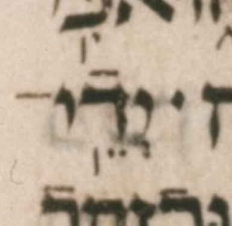
As in many other cases we see in this document, BHS seems to be aggressively uncharitable in its transcription of this somewhat-ambiguous vertical line, avoiding the most likely intended meaning (here meteg) in favor of a less likely, indeed “illegal” alternative (here merkha). In this case the mark even lacks any inclination that would suggest merkha.
As usual, when we say an accent is “illegal” we mean that it does not conform to the consensus grammar of accents, given the surrounding accent-context. Thus our degree of certainty that an accent is “illegal” depends on our degree of certainty about the surrounding accent-context. At times, our degree of certainty about the context is not high, for example due to ambiguity between merkha and tipeḥa. I don’t think that is the case here, but I thought I would bring up the general point anyway.
Finally, it should be noted that the mark preceding this word’s yod is assumed to be a spacer.
| 0 | slqc | |||||
| 1 | atnc | slqc | ||||
| 2 | tipp | atnp | zaqqc | slqc | ||
| 3 | pashp | zaqqp | tipp | slqp | ||
| mer tip | mun atn | pash | mun zaqq | ERROR | slq | |
🔗 Summary: BHS transcribes a syllable as having qadma rather than pashta.
Mwd | UXLC | UXLC change
לשמ֗ע על־ דבר֨י עבד֣י הנבא֔ים אש֥ר אנכ֖י של֣ח אליכ֑ם והשכ֥ם ושל֖ח ול֥א שמעתֽם׃
| דבר֨י | qadma_on_ר | wlc_focus |
| דברי֙ | pashta_on_י | diff_wlc_uxlc |
| דברי֙ | pashta_on_י | diff_wlc_mam |
In BHS, the mark is “late” on the ר, i.e. it is on the left of the ר rather than in its center. If it were really a qadma, we would expect it to be centered on the ר.
Instead, it looks like a stranded pashta stress helper. (Some typography centers a pashta stress helper, making it indistinguishable from a qadma, but BHS aligns them distinctly.) I.e. in BHS, the mark looks like a pashta stress helper with no real (end-of-word) pashta to accompany it. (Note that that adding a real pashta to this word would not fix it, since a stress helper on a final syllable makes no sense.)
So, though above I said “BHS transcribes a syllable as having qadma rather than pashta”, a more detailed account would be “BHS transcribes a syllable as having a stranded pashta stress helper on its first letter rather than a pashta on its last letter, and WLC transcribes BHS’s stranded stress helper as a qadma.”
Note that originally WLC had no distinction between a qadma and a pashta stress helper, using code 63 for both, but later WLC added a separate code for the pashta stress helper, code 33. So WLC may have had no choice but to transcribe BHS’s stranded stress helper as a qadma, since it may have had no code for a pashta stress helper at the time. In any case, the serious error is BHS’s transcription, not WLC’s transcription of BHS.
Compare je 44:17, another stranded stress helper — there a telisha qetanna helper (M-C 24) sitting on the syllable where the real (postpositive) telisha qetanna belongs. There too the word is finally stressed (a single-syllable word like כי counts as finally stressed) and so needs no stress helper at all: the cure is to move the mark onto the word’s final letter, where it becomes the real postpositive accent, not to add a separate real accent alongside the helper.
| 0 | slqc | |||||
| 1 | atnc | slqc | ||||
| 2 | zaqqc | atnc | tipp | slqp | ||
| 3 | revp | zaqqp | tipp | atnp | ||
| rev | ERROR | mer tip | mun atn | mer tip | mer slq | |
🔗 Summary: BHS transcribes a zaqef_gadol as a gershayim.
Mwd | UXLC | UXLC change
כה־ אמ֞ר יהו֧ה צבא֛ות אלה֥י ישרא֖ל לאמ֑ר שב֞רתי את־ ע֖ל מ֥לך בבֽל׃
| שב֞רתי | gershayim | wlc_focus |
| שב֕רתי | zaqef_gadol | diff_wlc_uxlc |
| שב֕רתי | zaqef_gadol | diff_wlc_mam |
| 0 | slqc | |||||
| 1 | atnc | slqc | ||||
| 2 | tipc | atnp | tipp | slqp | ||
| 3 | tevc | tipp | ||||
| 4 | gerp | tevp | ||||
| ger2 | dar tev | mer tip | atn | ERROR | mer slq | |
🔗 Summary: BHS transcribes a munaḥ as a tipeḥa.
Mwd | UXLC | UXLC change
ל֣א כבר֗ית אש֤ר כר֙תי֙ את־ אבות֔ם ביום֙ החזיק֣י ביד֔ם להוציא֖ם מא֖רץ מצר֑ים אשר־ ה֜מה הפ֣רו את־ ברית֗י ואנכ֛י בע֥לתי ב֖ם נאם־ יהוֽה׃
| מא֖רץ | tipeḥa | wlc_focus |
| מא֣רץ | munaḥ | diff_wlc_uxlc |
| מא֣רץ | munaḥ | diff_wlc_mam |
See the image in the UXLC change to which we link above.
| 0 | slqc | |||||||||||
| 1 | atnc | slqc | ||||||||||
| 2 | zaqqc | atnc | tipc | slqp | ||||||||
| 3 | revp | zaqqc | zaqqc | atnc | revc | tipc | ||||||
| 4 | pashp | zaqqp | pashp | zaqqp | tipp | atnp | gerp | revp | tevp | tipp | ||
| mun rev | mah pash | zaqq | pash | mun zaqq | tip | ERROR | ger | mun rev | tev | mer tip | slq | |
🔗 Summary: A telisha qetanna is placed on a non-final letter rather than on its word’s final letter.
Mwd | UXLC | UXLC change
כ֩י עש֨ה נעש֜ה את־ כל־ הדב֣ר׀ אשר־ יצ֣א מפ֗ינו לקט֞ר למל֣כת השמים֮ והסיך־ ל֣ה נסכים֒ כאש֨ר עש֜ינו אנ֤חנו ואבת֙ינו֙ מלכ֣ינו ושר֔ינו בער֣י יהוד֔ה ובחצ֖ות ירושל֑ם ונשבע־ ל֙חם֙ ונהי֣ה טוב֔ים ורע֖ה ל֥א ראֽינו׃
| כ֩י | wlc_focus | |
| כי֩ | diff_wlc_uxlc | |
| כי֩ | diff_wlc_mam[1] |
A telisha qetanna is a postpositive accent: it belongs on the final letter of its word. Here, though, it sits on the first letter, the kaf of כִּי, with nothing on the final yod. Because the grammar checker reads the Unicode-converted source, this misplacement of the mark is the only defect it can see.
We detect this in the lexical phase, alongside the stranded zarqa/tsinnorit stress helpers, but the violation is really one of intra-word grammar: a rule about where within a word a postpositive accent may fall, not about the alphabet of marks. It is one instance of a broader family of word-level rules we have not yet implemented in general — every postpositive accent must fall on its word’s final letter, every prepositive on its first.
In the Michigan-Claremont source the defect is actually compound. The mark is coded 24 — the medial telisha qetanna, properly a stress helper to a following 04 — rather than 04, the real, postpositive telisha qetanna; and it is written one letter too early, on the kaf rather than the yod. The Unicode conversion erases the 24-versus-04 distinction (both become the single telisha-qetanna codepoint), so only the misplacement survives for the checker; but the M-C also carries the additional coding error of a 24 stress helper with no 04 for it to help. An argument runs the other way, though: given that the mark is misplaced onto a nonfinal letter, coding it 04 there would arguably be worse, since as a 24 the word at least obeys the invariant that 04 falls only on a final letter and 24 only on a nonfinal one. It is not important to rank exactly how flawed this word is.
The UXLC change linked above moves the telisha qetanna forward one letter, from the kaf to the yod, leaving a normal postpositive telisha qetanna on כִּי’s final letter. Being Unicode rather than M-C, UXLC has only the one telisha-qetanna codepoint to begin with, so there is no 24-versus-04 distinction for it to recode; relocating the mark is the whole of the fix.
Compare je 26:5, a closely analogous case: there a stranded pashta stress helper sits on the syllable where the real pashta belongs. In both verses the word is finally stressed (and a single-syllable word like כי counts as finally stressed), so it needs — and should have — no stress helper at all. The cure is therefore not to supply the helper a “missing partner” accent, but to move the mark onto the word’s final letter, where it stops being a stress helper and simply becomes the real postpositive accent.
It remains to be determined whether this error originates in BHS — the more likely source, as with most errors discussed in this document — or is original to WLC, which is less likely but not unheard of.
| 0 | illegal_mark medial telisha qetanna in כִּ֩י |
| ERROR |
🔗 Summary: BHS transcribes a meteg as a merkha.
Mwd | UXLC | Pending UXLC change
אסר֣ו הסוס֗ים ועלו֙ הפ֣רש֔ים והתיצב֖ו בכ֥ובע֑ים מרקו֙ הרמח֔ים לבש֖ו הסרינֽת׃
| בכ֥ובע֑ים | merkha-etnaḥta | wlc_focus |
| בכובע֑ים | etnaḥta | diff_wlc_mam |
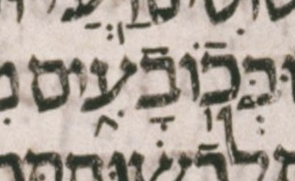
| 0 | slqc | ||||||||
| 1 | atnc | slqc | |||||||
| 2 | zaqqc | atnc | zaqqc | slqc | |||||
| 3 | revp | zaqqc | tipp | atnp | pashp | zaqqp | tipp | slqp | |
| 4 | pashp | zaqqp | |||||||
| mun rev | pash | mun zaqq | tip | ERROR | pash | zaqq | tip | slq | |
🔗 Summary: BHS transcribes a meteg as a tipeḥa.
לכ֞ן הנ֖ה־ ימ֤ים באים֙ נאם־ יהו֔ה ושלחתי־ ל֥ו צע֖ים וצע֑הו וכל֣יו יר֔יקו ונבליה֖ם ינפֽצו׃
| הנ֖ה־ | tipeḥa-maqaf | wlc_focus |
| הנֽה־ | meteg-maqaf | diff_wlc_mam |
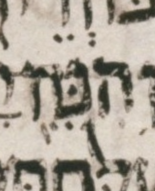
Yet another aggressively uncharitable, overly-literal transcription by BHS. The slightly northwest-to-southeast (tipeḥa-like) inclination of the mark in question is, while not irrelevant, hardly definitive.
| 0 | slqc | ||||
| 1 | atnc | slqc | |||
| 2 | tipp | atnp | zaqqp | slqc | |
| 3 | tipp | slqp | |||
| ERROR | ERROR | mun zaqq | tip | slq | |
🔗 Summary: BHS misses a pashta on אריצנו, transcribing only its stress helper.
Mwd | UXLC | UXLC change | Pending UXLC change
ה֠נה כארי֞ה יעל֨ה מגא֣ון הירדן֮ אל־ נו֣ה איתן֒ כי־ ארג֤יעה אריצ֨נו מעל֔יה ומ֥י בח֖ור אל֣יה אפק֑ד כ֣י מ֤י כמ֙וני֙ ומ֣י יעיד֔ני ומי־ ז֣ה רע֔ה אש֥ר יעמ֖ד לפנֽי׃
| אריצ֨נו | qadma_on_צ | wlc_focus |
| אריצ֨נו֙ | qadma_on_צ-pashta_on_ו | diff_wlc_uxlc |
| אריצ֙נו֙ | pashta_on_צ-pashta_on_ו | diff_wlc_mam |
See the image in the UXLC change to which we link above. BHS transcribes only the pashta stress helper, not the pashta itself. So, understandably, WLC transcribes this mark as a qadma. The missing pashta is the cause, but the ERROR lands one phrase to the left: with no zaqef clause forming, the tipeḥa phrase over אל־נוה איתן כי־ארגיעה fails and אריצנו is absorbed as the munaḥ of the following atnaḥ phrase.
| 0 | slqc | ||||||||||
| 1 | atnc | slqc | |||||||||
| 2 | segac | atnc | zaqqc | slqc | |||||||
| 3 | zarc | segap | tipp | atnp | pashp | zaqqp | zaqqp | slqc | |||
| 4 | telgp | zarc | tipp | slqp | |||||||
| 5 | gerp | zarp | |||||||||
| telg | ger2 | qom mun zar | mun sega | ERROR | mun atn | mun mah pash | mun zaqq | mun zaqq | mer tip | slq | |
🔗 Summary: BHS transcribes a mahapakh as a munaḥ.
Mwd | UXLC | Pending UXLC change
רפ֣ינו את־ בבל֙ ול֣א נרפ֔תה עזב֕וה ונל֖ך א֣יש לארצ֑ו כי־ נג֤ע אל־ השמ֙ים֙ משפט֔ה ונש֖א עד־ שחקֽים׃
| רפ֣ינו | munaḥ | wlc_focus |
| רפ֤אנו | mahapakh | diff_wlc_mam |
| 0 | slqc | ||||||||
| 1 | atnc | slqc | |||||||
| 2 | zaqqc | atnc | zaqqc | slqc | |||||
| 3 | pashp | zaqqp | zaqqp | atnc | pashp | zaqqp | tipp | slqp | |
| 4 | tipp | atnp | |||||||
| ERROR | mun zaqq | zaqg | tip | mun atn | mah pash | zaqq | tip | slq | |
🔗 Summary: BHS transcribes a merkha as a tipeḥa.
ותש֨א את֜י ר֗וח ותב֣א א֠תי אל־ ש֨ער בית־ יהו֤ה הקדמוני֙ הפונ֣ה קד֔ימה והנה֙ בפ֣תח הש֔ער עשר֥ים וחמש֖ה א֑יש וארא֨ה בתוכ֜ם את־ יאזני֧ה בן־ עז֛ר ואת־ פלטי֥הו בן־ בני֖הו שר֖י העֽם׃
| שר֖י | tipeḥa | wlc_focus |
| שר֥י | merkha | diff_wlc_mam |
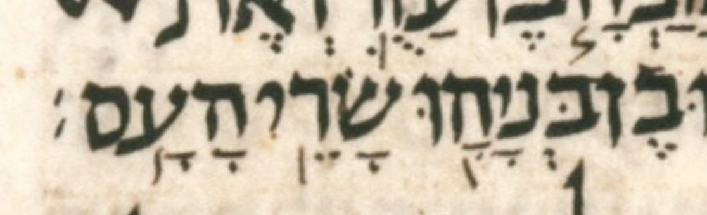
In the LC, inclination does not reliably identify a mark as a merkha, a tipeḥa, or a meteg. Yet, from context, we can usually determine the most likely intended meaning, and that is the case here with שרי. It is aggressively uncharitable to transcribe the mark on שרי as tipeḥa: tipeḥa is the least likely of the three possible meanings of this mark. Merkha is by far the most likely. If the mark were meteg, we would have to assume that a maqaf is missing.
| 0 | slqc | ||||||||||||
| 1 | atnc | slqc | |||||||||||
| 2 | zaqqc | atnc | tipc | slqp | |||||||||
| 3 | revc | zaqqc | zaqqc | atnc | tevc | tipp | |||||||
| 4 | gerp | revp | pashc | zaqqp | pashp | zaqqp | tipp | atnp | gerp | tevp | |||
| 5 | telgp | pashp | |||||||||||
| qom ger | rev | mun telg | qom mah pash | mun zaqq | pash | mun zaqq | mer tip | atn | qom ger | dar tev | mer tip | ERROR | |
🔗 Summary: BHS transcribes a meteg as a merkha due to the LC’s missing maqaf.
ל֠מען לא־ יתע֨ו ע֤וד בית־ ישראל֙ מאחר֔י ולא־ יטמא֥ו ע֖וד בכל־ פשעיה֑ם וה֥יו ל֣י לע֗ם ואני֙ אהי֤ה להם֙ לאלה֔ים נא֖ם אדנ֥י יהוֽה׃
| וה֥יו ל֣י | merkha munaḥ | wlc_focus |
| והיו־ ל֣י | maqaf munaḥ | diff_wlc_mam |
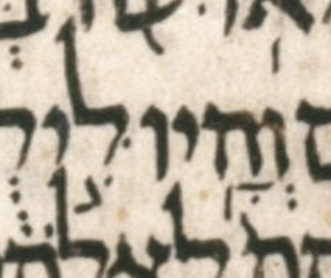
In the LC, inclination does not reliably identify a mark as a merkha, a tipeḥa, or a meteg. Yet, from context, we can usually determine the most likely intended meaning, and that is the case here with והיו. The most likely intended meaning of the mark on והיו is meteg, even though that implies that a maqaf is missing.
| 0 | slqc | ||||||||||
| 1 | atnc | slqc | |||||||||
| 2 | zaqqc | atnc | zaqqc | slqc | |||||||
| 3 | pashc | zaqqp | tipp | atnp | revp | zaqqc | tipp | slqp | |||
| 4 | telgp | pashp | pashp | zaqqc | |||||||
| 5 | pashp | zaqqp | |||||||||
| telg | qom mah pash | zaqq | mer tip | atn | ERROR | pash | mah pash | zaqq | tip | mer slq | |
🔗 Summary: A sof pasuq is missing somewhere in the LC-BHS-WLC pipeline.
ואמרת֕ם ל֥א יתכ֖ן ד֣רך אדנ֑י א֧יש כדרכ֛יו אשפ֥וט אתכ֖ם ב֥ית ישראֽל
| ישראֽל | ]p | silluq-no_sof_pasuq | wlc_focus |
| ישראֽל׃ | silluq-sof_pasuq | diff_wlc_mam |
Likely the sof pasuq is missing from the start of the pipeline, i.e. from the LC.
| 0 | slqc | ||||||
| 1 | slqc | sof_pasuqp | |||||
| 2 | atnc | slqc | |||||
| 3 | zaqqp | atnc | tipc | slqp | |||
| 4 | tipp | atnp | tevp | tipp | |||
| zaqg | mer tip | mun atn | dar tev | mer tip | mer slq | ERROR | |
🔗 Summary: A sof pasuq is missing somewhere in the LC-BHS-WLC pipeline.
צר֥ר ר֛וח אות֖ה בכנפ֑יה ויב֖שו מזבחותֽם
| מזבחותֽם | ]Q]n]p | silluq-no_sof_pasuq | wlc_focus |
| מזבחותֽם׃ | silluq-sof_pasuq | diff_wlc_mam |
Likely the sof pasuq is missing from the start of the pipeline, i.e. from the LC.
| 0 | slqc | |||||
| 1 | slqc | sof_pasuqp | ||||
| 2 | atnc | slqc | ||||
| 3 | tipc | atnp | tipp | slqp | ||
| 4 | tevp | tipp | ||||
| mer tev | tip | atn | tip | slq | ERROR | |
🔗 Summary: A sof pasuq is missing somewhere in the LC-BHS-WLC pipeline.
כי־ ה֙מה֙ על֣ו אש֔ור פ֖רא בוד֣ד ל֑ו אפר֖ים התנ֥ו אהבֽים
| אהבֽים | ]Q]n]p | silluq-no_sof_pasuq | wlc_focus |
| אהבֽים׃ | silluq-sof_pasuq | diff_wlc_mam |
Likely the sof pasuq is missing from the start of the pipeline, i.e. from the LC.
| 0 | slqc | ||||||
| 1 | slqc | sof_pasuqp | |||||
| 2 | atnc | slqc | |||||
| 3 | zaqqc | atnc | tipp | slqp | |||
| 4 | pashp | zaqqp | tipp | atnp | |||
| pash | mun zaqq | tip | mun atn | tip | mer slq | ERROR | |
🔗 Summary: Somewhere in the LC-BHS-WLC pipeline, sof_pasuq appears rather than silluq-sof_pasuq.
ועמ֥י תלוא֖ים למשובת֑י ואל־ על֙ יקרא֔הו י֖חד ל֥א ירומם׃
| ירומם׃ | ]U | sof_pasuq | wlc_focus |
| ירומֽם׃ | silluq-sof_pasuq | diff_wlc_mam |
| 0 | slqc | |||||
| 1 | atnc | slqc | ||||
| 2 | tipp | atnp | zaqqc | slqc | ||
| 3 | pashp | zaqqp | tipp | slqp | ||
| mer tip | atn | pash | zaqq | tip | ERROR | |
🔗 Summary: A sof pasuq is missing somewhere in the LC-BHS-WLC pipeline.
והצ֤תי אש֙ בחומ֣ת רב֔ה ואכל֖ה ארמנות֑יה בתרועה֙ בי֣ום מלחמ֔ה בס֖ער בי֥ום סופֽה
| סופֽה | ]Q]n]p | silluq-no_sof_pasuq | wlc_focus |
| סופֽה׃ | silluq-sof_pasuq | diff_wlc_mam |
Likely the sof pasuq is missing from the start of the pipeline, i.e. from the LC.
| 0 | slqc | ||||||||
| 1 | slqc | sof_pasuqp | |||||||
| 2 | atnc | slqc | |||||||
| 3 | zaqqc | atnc | zaqqc | slqc | |||||
| 4 | pashp | zaqqp | tipp | atnp | pashp | zaqqp | tipp | slqp | |
| mah pash | mun zaqq | tip | atn | pash | mun zaqq | tip | mer slq | ERROR | |
🔗 Summary: A sof pasuq is missing somewhere in the LC-BHS-WLC pipeline.
השת֤ים במזרקי֙ י֔ין וראש֥ית שמנ֖ים ימש֑חו ול֥א נחל֖ו על־ ש֥בר יוסֽף
| יוסֽף | ]Q]n]p | silluq-no_sof_pasuq | wlc_focus |
| יוסֽף׃ | silluq-sof_pasuq | diff_wlc_mam |
Likely the sof pasuq is missing from the start of the pipeline, i.e. from the LC.
| 0 | slqc | ||||||
| 1 | slqc | sof_pasuqp | |||||
| 2 | atnc | slqc | |||||
| 3 | zaqqc | atnc | tipp | slqp | |||
| 4 | pashp | zaqqp | tipp | atnp | |||
| mah pash | zaqq | mer tip | atn | mer tip | mer slq | ERROR | |
🔗 Summary: A sof pasuq is missing somewhere in the LC-BHS-WLC pipeline.
ואדנ֨י יהו֜ה הצבא֗ות הנוג֤ע בא֙רץ֙ ותמ֔וג ואבל֖ו כל־ י֣ושבי ב֑ה ועלת֤ה כיאר֙ כל֔ה ושקע֖ה כיא֥ר מצרֽים
| מצרֽים | ]Q]n]p | silluq-no_sof_pasuq | wlc_focus |
| מצרֽים׃ | silluq-sof_pasuq | diff_wlc_mam |
Likely the sof pasuq is missing from the start of the pipeline, i.e. from the LC.
| 0 | slqc | ||||||||||
| 1 | slqc | sof_pasuqp | |||||||||
| 2 | atnc | slqc | |||||||||
| 3 | zaqqc | atnc | zaqqc | slqc | |||||||
| 4 | revc | zaqqc | tipp | atnp | pashp | zaqqp | tipp | slqp | |||
| 5 | gerp | revp | pashp | zaqqp | |||||||
| qom ger | rev | mah pash | zaqq | tip | mun atn | mah pash | zaqq | tip | mer slq | ERROR | |
🔗 Summary: The LC has no visible accent on עליה.
Mwd | UXLC | UXLC note page
חז֖ון עבדי֑ה כה־ אמר֩ אדנ֨י יהו֜ה לאד֗ום שמוע֨ה שמ֜ענו מא֤ת יהוה֙ וציר֙ בגוי֣ם של֔ח ק֛ומו ונק֥ומה עליה למלחמֽה׃
| עליה | ]Q]c]n | no_accent | wlc_focus |
| על֖יה | tipeḥa | diff_wlc_mam |
See the image in the UXLC note to which we link above.
| 0 | slqc | ||||||||||
| 1 | atnc | slqc | |||||||||
| 2 | tipp | atnp | zaqqc | slqc | |||||||
| 3 | revc | zaqqc | tipc | slqp | |||||||
| 4 | gerp | revp | pashc | zaqqc | tevp | tipp | |||||
| 5 | gerp | pashp | pashp | zaqqp | |||||||
| tip | atn | telq qom ger | rev | qom ger | mah pash | pash | mun zaqq | tev | ERROR | slq | |
🔗 Summary: BHS transcribes a syllable as having qadma rather than pashta.
Mwd | UXLC | UXLC change
האמ֣ור בית־ יעק֗ב הקצר֙ ר֣וח יהו֔ה אם־ א֖לה מעלל֑יו הל֤וא דבר֨י ייט֔יבו ע֖ם היש֥ר הולֽך׃
| דבר֨י | qadma_on_ר | wlc_focus |
| דברי֙ | pashta_on_י | diff_wlc_uxlc |
| דברי֙ | pashta_on_י | diff_wlc_mam[1] |
See the image in the UXLC change to which we link above. The qadma (rather than pashta) on דברי is the cause, but the ERROR does not land there: with no pashta to head it, the zaqef clause over הלוא דברי ייטיבו never forms, so the failure surfaces later, on the enclosing tipeḥa phrase over הלוא דברי ייטיבו עם. The defect itself, though, is fundamentally a pashta-vs-qadma confusion on the single mark on דברי; the malformed tipeḥa phrase (tipexa_phrase → ERROR) is only a surface artifact of how the LALR parse fails, not a problem with the tipeḥa or the words that phrase spans — flipping that one mark (qadma → pashta) clears the error entirely.
| 0 | slqc | ||||||
| 1 | atnc | slqc | |||||
| 2 | zaqqc | atnc | tipp | slqp | |||
| 3 | revp | zaqqc | tipp | atnp | |||
| 4 | pashp | zaqqp | |||||
| mun rev | pash | mun zaqq | tip | atn | ERROR | mer slq | |
🔗 Summary: BHQ transcribes a meteg as a tipeḥa due to the LC’s missing maqaf.
ע֤ל צואר֙נו֙ נרד֔פנו יג֖ענו ול֥א הונ֖ח לֽנו׃
| הֽונ֖ח | ]Q]c]p | meteg-tipeḥa | wlc_focus |
| הֽונֽח־ | meteg-meteg-maqaf | diff_wlc_mam |
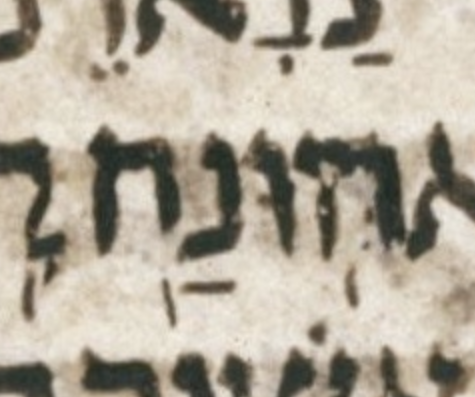
The consensus pointing of the last two atoms in this verse is הֽוּנַֽח־לָֽנוּ׃. I.e. ignoring vowel marks, the consensus for the atom in question is הֽונֽח־, i.e. two meteg marks and a maqaf.
Given this consensus, the most charitable transcription of the LC here is that it is missing the maqaf, leaving הונח with no accent, only two meteg marks. Even ignoring the consensus, i.e. transcribing “blind,” this is the most charitable transcription.
Nonetheless, BHQ opts to make הונח “locally legal” by giving it an accent. It gives it an accent by transcribing the second mark as a second tipeḥa rather than as a meteg. WLC follows BHQ in this, as it explicitly notes with a bracket-Q note. (Hover over the letters of the bracket notes above to decode them.)
This makes the word הונח locally legal while rendering the second half of the verse illegal by giving the silluq segment two words accented with tipeḥa. (This (short) verse has no etnaḥta segment.)
It is uncharitable to transcribe this mark as a tipeḥa. Most likely what happened here is that the scribe forgot to add a maqaf. It is far less likely that the scribe intended to add a second tipeḥa, and a second merkha seems equally implausible.
The slightly northwest-to-southeast (tipeḥa-like) inclination of the mark in question is, while not irrelevant, hardly definitive.
Side note: there also seems to be some question of whether the נ in הונח should have a dagesh. BHQ claims that manuscripts L34 and Y (in its sigil vocabulary) have this dagesh. Breuer (in Da-at Miqra) claims that Minḥat Shai asserts this dagesh.
| 0 | slqc | |||
| 1 | zaqqc | slqc | ||
| 2 | pashp | zaqqp | tipp | slqp |
| mah pash | zaqq | tip | ERROR | |
🔗 Summary: BHS transcribes a tevir as a merkha.
Mwd | UXLC | UXLC change
ג֤ם לכל־ הדברים֙ אש֣ר ידב֔רו אל־ תת֖ן לב֑ך אש֥ר לא־ תשמ֥ע את־ עבדך֖ מקללֽך׃
| אש֥ר | merkha | wlc_focus |
| אש֛ר | tevir | diff_wlc_uxlc |
| אש֛ר | tevir | diff_wlc_mam |
See the image in the UXLC change to which we link above.
| 0 | slqc | |||||
| 1 | atnc | slqc | ||||
| 2 | zaqqc | atnc | tipp | slqp | ||
| 3 | pashp | zaqqp | tipp | atnp | ||
| mah pash | mun zaqq | tip | atn | ERROR | slq | |
🔗 Summary: WLC transcribes a tipeḥa as a merkha.
Mwd | UXLC | UXLC change
טוב֥ה חכמ֖ה מכל֣י קר֑ב וחוט֣א אח֔ד יאב֥ד טוב֥ה הרבֽה׃
| יאב֥ד טוב֥ה | merkha merkha | wlc_focus |
| יאב֥ד טוב֖ה | merkha tipeḥa | diff_wlc_uxlc |
| יאב֖ד טוב֥ה | tipeḥa merkha | diff_wlc_mam |
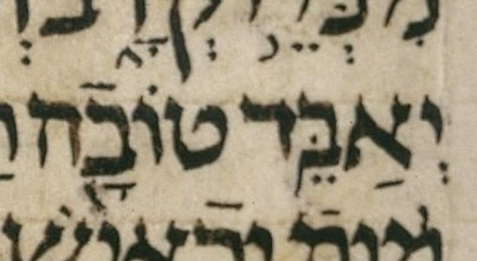
It is very rare for WLC to diverge from BHS like this, without a bracket note. Perhaps WLC agrees with an older BHS? I have only checked the 1984 and 1997 editions of BHS.
The LC diverges from consensus here by having merkha tipeḥa rather than tipeḥa merkha, but that is still accent-grammatical, so that divergence is not relevant here.
| 0 | slqc | |||
| 1 | atnc | slqc | ||
| 2 | tipp | atnp | zaqqp | slqp |
| mer tip | mun atn | mun zaqq | ERROR | |
🔗 Summary: Defying both BHS and the LC, WLC transcribes a yetiv as a mahapakh.
Mwd | UXLC | UXLC change
כ֤י את־ כל־ מעש֔ה האלה֛ים יב֥א במשפ֖ט ע֣ל כל־ נעל֑ם אם־ ט֖וב ואם־ רֽע׃
| כ֤י | mahapakh | wlc_focus |
| כ֚י | yetiv | diff_wlc_uxlc |
| כ֚י | yetiv | diff_wlc_mam |
It is very rare for WLC to diverge from BHS like this, without a bracket note. Perhaps WLC agrees with an older BHS? I have only checked the 1984 and 1997 editions of BHS.
| 0 | slqc | |||||
| 1 | atnc | slqc | ||||
| 2 | zaqqp | atnc | tipp | slqp | ||
| 3 | tipc | atnp | ||||
| 4 | tevp | tipp | ||||
| ERROR | tev | mer tip | mun atn | tip | slq | |
🔗 Summary: BHS transcribes a meteg as a merkha due to the LC’s missing maqaf.
Mwd | UXLC | UXLC change
ודי־ חז֜יתה רגלי֣א ואצבעת֗א מנה֞ן חס֤ף די־ פחר֙ ומנה֣ין פרז֔ל מלכ֤ו פליגה֙ תהו֔ה ומן־ נצבת֥א ד֥י פרזל֖א להוא־ ב֑ה כל־ קבל֙ ד֣י חז֔יתה פ֨רזל֔א מער֖ב בחס֥ף טינֽא׃
| ד֥י | merkha | wlc_focus |
| דֽי | meteg-space | diff_wlc_uxlc |
| דֽי־ | meteg-maqaf | diff_wlc_mam |
See the image in the UXLC change to which we link above.
| 0 | slqc | |||||||||||||
| 1 | atnc | slqc | ||||||||||||
| 2 | zaqqc | atnc | zaqqc | slqc | ||||||||||
| 3 | revc | zaqqc | zaqqc | atnc | pashp | zaqqp | zaqqp | slqc | ||||||
| 4 | gerp | revp | pashc | zaqqp | pashp | zaqqp | tipp | atnp | tipp | slqp | ||||
| 5 | gerp | pashp | ||||||||||||
| ger | mun rev | ger2 | mah pash | mun zaqq | mah pash | zaqq | ERROR | atn | pash | mun zaqq | methiga-zaqef | tip | mer slq | |
🔗 Summary: BHS transcribes a munaḥ as a merkha.
Mwd | UXLC | UXLC change
וישמ֞ע סנבל֣ט החרנ֗י וטוביה֙ הע֣בד העמנ֔י וי֥רע לה֖ם רע֣ה גדל֑ה אשר־ ב֥א אד֔ם לבק֥ש טוב֖ה לבנ֥י ישראֽל׃
| ב֥א | merkha | wlc_focus |
| ב֣א | munaḥ | diff_wlc_uxlc |
| ב֣א | munaḥ | diff_wlc_mam |
| 0 | slqc | ||||||||
| 1 | atnc | slqc | |||||||
| 2 | zaqqc | atnc | zaqqp | slqc | |||||
| 3 | revc | zaqqc | tipp | atnp | tipp | slqp | |||
| 4 | gerp | revp | pashp | zaqqp | |||||
| ger2 | mun rev | pash | mun zaqq | mer tip | mun atn | ERROR | mer tip | mer slq | |
🔗 Summary: The LC has a munaḥ where a merkha is expected.
אל֥וף קנ֛ז אל֥וף תימ֖ן אל֣וף מבצֽר׃
| אל֣וף | munaḥ | wlc_focus |
| אל֥וף | merkha | diff_wlc_mam |
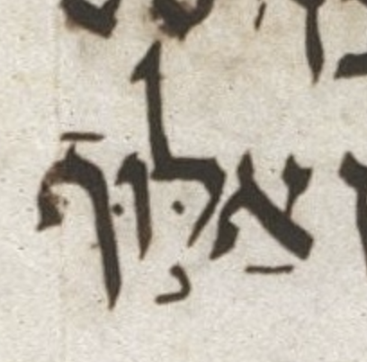
| 0 | slqc | ||
| 1 | tipc | slqp | |
| 2 | tevp | tipp | |
| mer tev | mer tip | ERROR | |
🔗 Summary: BHS accents a word with munaḥ rather than segol.
Mwd | UXLC | UXLC change
ויזב֞ח המ֣לך שלמה֮ את־ ז֣בח הבק֗ר עשר֤ים ושנ֙ים֙ א֔לף וצ֕אן מא֥ה ועשר֖ים א֑לף ויחנכו֙ את־ ב֣ית האלה֔ים המ֖לך וכל־ העֽם׃
| ז֣בח הבק֗ר | munaḥ revia | wlc_focus |
| זבח֒ הבק֗ר | segol_accent revia | diff_wlc_uxlc |
| ז֣בח הבקר֒ | munaḥ segol_accent | diff_wlc_mam |
MAM has munaḥ segol whereas the LC has segol revia.
| 0 | slqc | |||||||||||
| 1 | atnc | slqc | ||||||||||
| 2 | segac | atnc | zaqqc | slqc | ||||||||
| 3 | zarc | segap | zaqqc | atnc | pashp | zaqqp | tipp | slqp | ||||
| 4 | gerp | zarp | pashp | zaqqp | zaqqp | atnc | ||||||
| 5 | tipp | atnp | ||||||||||
| ger2 | mun zar | ERROR | mah pash | zaqq | zaqg | mer tip | atn | pash | mun zaqq | tip | slq | |
🔗 Summary: BHS transcribes a darga as a mahapakh.
Mwd | UXLC | UXLC change
וא֨לה שר֤י הנצב֛ים אשר־ למ֥לך שלמ֖ה חמש֣ים ומאת֑ים הרד֖ים בעֽם׃
| שר֤י | mahapakh | wlc_focus |
| שר֧י | darga | diff_wlc_uxlc |
| שר֧י | darga | diff_wlc_mam |
| 0 | slqc | ||||
| 1 | atnc | slqc | |||
| 2 | tipc | atnp | tipp | slqp | |
| 3 | tevp | tipp | |||
| ERROR | mer tip | mun atn | tip | slq | |
🔗 Summary: BHS transcribes an etnaḥta as a tipeḥa.
Mwd | UXLC | UXLC change
ויה֤י אתם֙ בב֣ית האלה֔ים מתחב֖א ש֣ש שנ֖ים ועתלי֖ה מל֥כת על־ האֽרץ׃
| שנ֖ים | tipeḥa | wlc_focus |
| שנ֑ים | etnaḥta | diff_wlc_uxlc |
| שנ֑ים | etnaḥta | diff_wlc_mam |
See the image in the UXLC change to which we link above.
| 0 | slqc | |||
| 1 | zaqqc | slqc | ||
| 2 | pashp | zaqqp | tipp | slqp |
| mah pash | mun zaqq | tip | ERROR | |
🔗 Summary: BHS adds a gershayim out of nowhere.
Mwd | UXLC | Pending UXLC change
ובנ֞יו י֧ר֞ב המש֣א על֗יו ויסוד֙ ב֣ית האלה֔ים הנ֣ם כתוב֔ים על־ מדר֖ש ס֣פר המלכ֑ים וימל֛ך אמצי֥הו בנ֖ו תחתֽיו׃
| י֧ר֞ב | darga-gershayim | wlc_focus |
| י֧רב | darga | diff_wlc_mam |
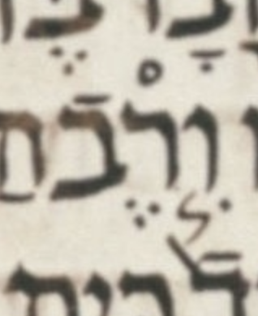
Perhaps the darga was accidentally repeated from the previous word, which legitimately has a darga.
| 0 | slqc | |||||||||
| 1 | atnc | slqc | ||||||||
| 2 | zaqqc | atnc | tipc | slqp | ||||||
| 3 | revc | zaqqc | zaqqp | atnc | tevp | tipp | ||||
| 4 | gerp | revp | pashp | zaqqp | tipp | atnp | ||||
| ger2 | ERROR | pash | mun zaqq | mun zaqq | tip | mun atn | tev | mer tip | slq | |
🔗 Summary: BHS transcribes a mahapakh as a munaḥ.
Mwd | UXLC | UXLC change
בן־ עשר֨ים וחמ֤ש שנה֙ מל֣ך אמצי֔הו ועשר֣ים ות֙שע֙ שנ֔ה מל֖ך בירושל֑ם וש֣ם אמ֔ו יהועד֖ן מירושלֽים׃
| ועשר֣ים | munaḥ | wlc_focus |
| ועשרי֤ם | mahapakh | diff_wlc_uxlc |
| ועשר֤ים | mahapakh | diff_wlc_mam |
See the UXLC change image. UXLC corrects WLC but places the mahapakh under the yod, an aggresively uncharitable location for it.
| 0 | slqc | ||||||||
| 1 | atnc | slqc | |||||||
| 2 | zaqqc | atnc | zaqqp | slqc | |||||
| 3 | pashp | zaqqp | zaqqc | atnc | tipp | slqp | |||
| 4 | pashp | zaqqp | tipp | atnp | |||||
| qom mah pash | mun zaqq | ERROR | zaqq | tip | atn | mun zaqq | tip | slq | |
The following bracket-note codes are used on this page.
]1: BHS has been faithful to ל (the Leningrad Codex) where there might be a question of the validity of the form and we keep the same form as BHS. (This is similar to the note “]U”, but the latter refers to cases where BHQ has been published and we keep the same form as both BHS and BHQ.)]Q: Marks a place where we agree with BHQ against BHS in reading ל. This note will be preceded or followed by one or more bracket notes to specify the type(s) of disagreement(s) with BHS.]S: Marks a Tsinnorit accent <82> that is written after (to the left of) a final Lamed in BHQ but is written before (to the right of) the Lamed in ל and other printed Hebrew Bibles (other than BHQ and BHS). This note marks a typesetting problem in BHQ.]U: BHS and BHQ have both been faithful to ל (the Leningrad Codex) where there might be a question of the validity of the form and we keep the same form as both BHS and BHQ. This is similar to the note “]1”, but the latter refers to cases where we keep the same form as just BHS. (“]U” only applies when the relevant fascicle of BHQ has been published and BHQ has the same reading as BHS.)]c: We read an accent in ל differently from BHS. (This is similar to the note “]C”, but the latter refers to accent differences against BHQ.)]k: We read a consonant in ל differently from BHS. (This is similar to the note “]K”, but the latter refers to consonant differences against BHQ.)]n: An anomalous form in the text of ל. This bracket note was new to WLC 4.14 (only two occurrences in that version), and was not yet widely used at first, occurring on only 23 words in WLC 4.16. However, this bracket note occurs on 111 words (167 morphemes) in WLC 4.20.]p: We read a punctuation character (Maqqef, Mappiq, Dagesh, space, or Sof Pasuq) in ל differently from BHS. (This is similar to the note “]P”, but the latter refers to a punctuation difference against BHQ.)]s: Marks a Tsinnorit accent <82> that is written after (to the left of) a final Lamed in BHS but is written before (to the right of) the Lamed in ל and other printed Hebrew Bibles (other than BHS). This note marks a typesetting problem in BHS.]y: Yathir readings in ל which we have designated as Qeres. In WLC 4.14 and earlier, a few Yathir readings in ל were not marked as such because they were not treated as Qeres in either BHS or in the Dotan ADI edition of 1973, but beginning with 4.16 we rely only on whether or not something is a Yathir reading in ל.{kind=link}
{kind=link}
{kind=link}
{kind=link}
{kind=link}
{kind=link}
{kind=link}
{kind=link}
{kind=link}
{kind=link}
{kind=link}
{kind=link}
{kind=link}
{kind=link}
{kind=link}
{kind=link}
{kind=link}
{kind=link}
{kind=link}
{kind=link}